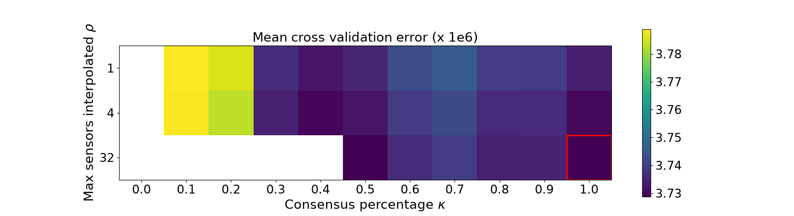
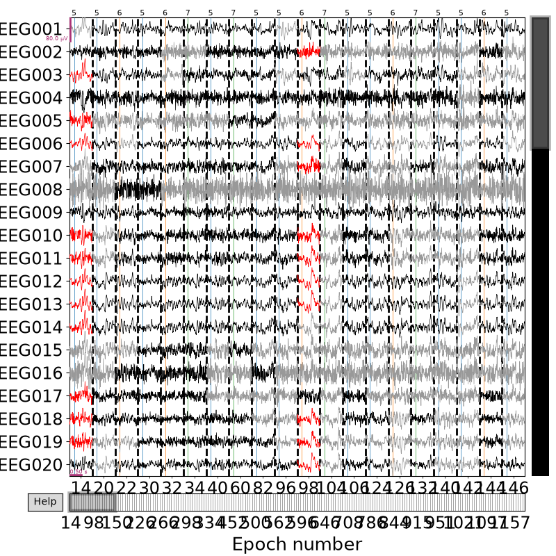
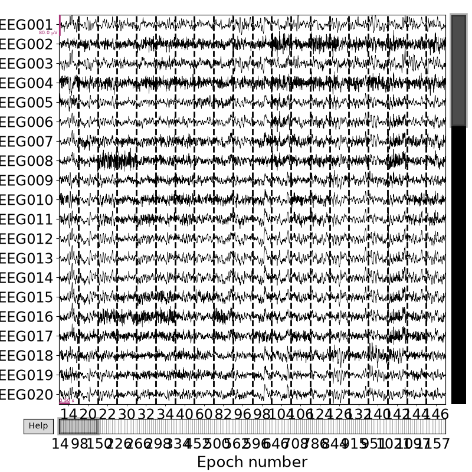
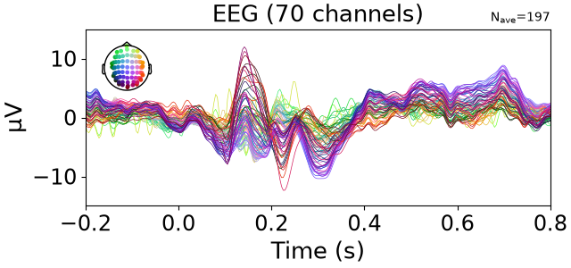

Note
Go to the end to download the full example code.
Visualize bad sensors per trial#
This example demonstrates how to use autoreject to
visualize the bad sensors in each trial
# Author: Mainak Jas <mainak.jas@telecom-paristech.fr>
# Denis A. Engemann <denis.engemann@gmail.com>
# License: BSD-3-Clause
# sphinx_gallery_thumbnail_number = 2
First, we download the data from OpenfMRI which is hosted on OpenNeuro.
We will do this using openneuro-py which can be installed using pip
(pip install openneuro-py).
import os
import openneuro
import autoreject
dataset = 'ds000117' # The id code on OpenNeuro for this example dataset
subject_id = 16 # OpenfMRI format of subject numbering
target_dir = os.path.join(
os.path.dirname(autoreject.__file__), '..', 'examples', dataset)
os.makedirs(target_dir, exist_ok=True)
openneuro.download(dataset=dataset, target_dir=target_dir,
include=[f'sub-{subject_id}/ses-meg/'])
👋 Hello! This is openneuro-py 2026.4.1. Great to see you! 🤗
👉 Please report problems 🤯 and bugs 🪲 at
https://github.com/openneuro-py/openneuro-py/issues
🌍 Preparing to download ds000117 …
📥 Retrieving up to 23 files (5 concurrent downloads).
Overall: 0%| | 0.00/4.85G [00:00<?, ?B/s]
Overall: 0%| | 1.67k/4.85G [00:00<561:11:32, 2.58kB/s]
Overall: 17%|█▋ | 824M/4.85G [00:11<00:57, 75.6MB/s]
Overall: 100%|██████████| 4.85G/4.85G [00:11<00:00, 445MB/s]
✅ Finished downloading ds000117.
🧠 Please enjoy your brains.
We will create epochs with data starting 200 ms before trigger onset and continuing up to 800 ms after that. The data contains visual stimuli for famous faces, unfamiliar faces, as well as scrambled faces.
Let us now load all the epochs into memory and concatenate them
import mne # noqa
epochs = list()
for run in range(3, 7):
run_fname = os.path.join(target_dir, f'sub-{subject_id}', 'ses-meg', 'meg',
f'sub-{subject_id}_ses-meg_task-facerecognition'
'_run-{:02d}_meg.fif'.format(run))
raw = mne.io.read_raw_fif(run_fname, preload=True)
raw.pick_types(eeg=True, meg=False, stim=True) # less memory + computation
raw.filter(1., 40., l_trans_bandwidth=0.5, n_jobs=1, verbose='INFO')
raw.set_channel_types({'EEG061': 'eog', 'EEG062': 'eog',
'EEG063': 'ecg', 'EEG064': 'misc'})
raw.rename_channels({'EEG061': 'EOG061', 'EEG062': 'EOG062',
'EEG063': 'ECG063', 'EEG064': 'MISC'})
events = mne.find_events(raw, stim_channel='STI101',
consecutive='increasing',
min_duration=0.003, verbose=True)
# Read epochs
mne.set_eeg_reference(raw)
epoch = mne.Epochs(raw, events, events_id, tmin, tmax, proj=True,
baseline=None,
preload=False, reject=None, decim=4)
epochs.append(epoch)
# Same `dev_head_t` for all runs so that we can concatenate them.
epoch.info['dev_head_t'] = epochs[0].info['dev_head_t']
epochs = mne.epochs.concatenate_epochs(epochs)
Opening raw data file /home/circleci/project/autoreject/../examples/ds000117/sub-16/ses-meg/meg/sub-16_ses-meg_task-facerecognition_run-03_meg.fif...
Read a total of 8 projection items:
mag_ssp_upright.fif : PCA-mags-v1 (1 x 306) idle
mag_ssp_upright.fif : PCA-mags-v2 (1 x 306) idle
mag_ssp_upright.fif : PCA-mags-v3 (1 x 306) idle
mag_ssp_upright.fif : PCA-mags-v4 (1 x 306) idle
mag_ssp_upright.fif : PCA-mags-v5 (1 x 306) idle
grad_ssp_upright.fif : PCA-grad-v1 (1 x 306) idle
grad_ssp_upright.fif : PCA-grad-v2 (1 x 306) idle
grad_ssp_upright.fif : PCA-grad-v3 (1 x 306) idle
Range : 40700 ... 588499 = 37.000 ... 534.999 secs
Ready.
Reading 0 ... 547799 = 0.000 ... 497.999 secs...
NOTE: pick_types() is a legacy function. New code should use inst.pick(...).
Filtering raw data in 1 contiguous segment
Setting up band-pass filter from 1 - 40 Hz
FIR filter parameters
---------------------
Designing a one-pass, zero-phase, non-causal bandpass filter:
- Windowed time-domain design (firwin) method
- Hamming window with 0.0194 passband ripple and 53 dB stopband attenuation
- Lower passband edge: 1.00
- Lower transition bandwidth: 0.50 Hz (-6 dB cutoff frequency: 0.75 Hz)
- Upper passband edge: 40.00 Hz
- Upper transition bandwidth: 10.00 Hz (-6 dB cutoff frequency: 45.00 Hz)
- Filter length: 7261 samples (6.601 s)
/home/circleci/project/examples/plot_visualize_bad_epochs.py:57: RuntimeWarning: The unit for channel(s) EEG064 has changed from V to NA.
raw.set_channel_types({'EEG061': 'eog', 'EEG062': 'eog',
Finding events on: STI101
296 events found on stim channel STI101
Event IDs: [ 5 6 7 13 14 15 17 18 19 261 262 263 269 271
273 274 275 4096 4101 4102 4103 4109 4110 4111 4113 4114 4115]
EEG channel type selected for re-referencing
Applying average reference.
Applying a custom ('EEG',) reference.
Not setting metadata
49 matching events found
No baseline correction applied
0 projection items activated
Opening raw data file /home/circleci/project/autoreject/../examples/ds000117/sub-16/ses-meg/meg/sub-16_ses-meg_task-facerecognition_run-04_meg.fif...
Read a total of 8 projection items:
mag_ssp_upright.fif : PCA-mags-v1 (1 x 306) idle
mag_ssp_upright.fif : PCA-mags-v2 (1 x 306) idle
mag_ssp_upright.fif : PCA-mags-v3 (1 x 306) idle
mag_ssp_upright.fif : PCA-mags-v4 (1 x 306) idle
mag_ssp_upright.fif : PCA-mags-v5 (1 x 306) idle
grad_ssp_upright.fif : PCA-grad-v1 (1 x 306) idle
grad_ssp_upright.fif : PCA-grad-v2 (1 x 306) idle
grad_ssp_upright.fif : PCA-grad-v3 (1 x 306) idle
Range : 36300 ... 582999 = 33.000 ... 529.999 secs
Ready.
Reading 0 ... 546699 = 0.000 ... 496.999 secs...
NOTE: pick_types() is a legacy function. New code should use inst.pick(...).
Filtering raw data in 1 contiguous segment
Setting up band-pass filter from 1 - 40 Hz
FIR filter parameters
---------------------
Designing a one-pass, zero-phase, non-causal bandpass filter:
- Windowed time-domain design (firwin) method
- Hamming window with 0.0194 passband ripple and 53 dB stopband attenuation
- Lower passband edge: 1.00
- Lower transition bandwidth: 0.50 Hz (-6 dB cutoff frequency: 0.75 Hz)
- Upper passband edge: 40.00 Hz
- Upper transition bandwidth: 10.00 Hz (-6 dB cutoff frequency: 45.00 Hz)
- Filter length: 7261 samples (6.601 s)
/home/circleci/project/examples/plot_visualize_bad_epochs.py:57: RuntimeWarning: The unit for channel(s) EEG064 has changed from V to NA.
raw.set_channel_types({'EEG061': 'eog', 'EEG062': 'eog',
Finding events on: STI101
296 events found on stim channel STI101
Event IDs: [ 5 6 7 13 14 15 17 18 19 256 261 262 263 269
271 273 274 275 4096 4101 4102 4103 4109 4110 4111 4113 4114 4115]
EEG channel type selected for re-referencing
Applying average reference.
Applying a custom ('EEG',) reference.
Not setting metadata
49 matching events found
No baseline correction applied
0 projection items activated
Opening raw data file /home/circleci/project/autoreject/../examples/ds000117/sub-16/ses-meg/meg/sub-16_ses-meg_task-facerecognition_run-05_meg.fif...
Read a total of 8 projection items:
mag_ssp_upright.fif : PCA-mags-v1 (1 x 306) idle
mag_ssp_upright.fif : PCA-mags-v2 (1 x 306) idle
mag_ssp_upright.fif : PCA-mags-v3 (1 x 306) idle
mag_ssp_upright.fif : PCA-mags-v4 (1 x 306) idle
mag_ssp_upright.fif : PCA-mags-v5 (1 x 306) idle
grad_ssp_upright.fif : PCA-grad-v1 (1 x 306) idle
grad_ssp_upright.fif : PCA-grad-v2 (1 x 306) idle
grad_ssp_upright.fif : PCA-grad-v3 (1 x 306) idle
Range : 60500 ... 602799 = 55.000 ... 547.999 secs
Ready.
Reading 0 ... 542299 = 0.000 ... 492.999 secs...
NOTE: pick_types() is a legacy function. New code should use inst.pick(...).
Filtering raw data in 1 contiguous segment
Setting up band-pass filter from 1 - 40 Hz
FIR filter parameters
---------------------
Designing a one-pass, zero-phase, non-causal bandpass filter:
- Windowed time-domain design (firwin) method
- Hamming window with 0.0194 passband ripple and 53 dB stopband attenuation
- Lower passband edge: 1.00
- Lower transition bandwidth: 0.50 Hz (-6 dB cutoff frequency: 0.75 Hz)
- Upper passband edge: 40.00 Hz
- Upper transition bandwidth: 10.00 Hz (-6 dB cutoff frequency: 45.00 Hz)
- Filter length: 7261 samples (6.601 s)
/home/circleci/project/examples/plot_visualize_bad_epochs.py:57: RuntimeWarning: The unit for channel(s) EEG064 has changed from V to NA.
raw.set_channel_types({'EEG061': 'eog', 'EEG062': 'eog',
Finding events on: STI101
292 events found on stim channel STI101
Event IDs: [ 5 6 7 13 14 15 17 18 19 256 261 269 271 273
274 275 4096 4101 4102 4103 4109 4110 4111 4113 4114 4115]
EEG channel type selected for re-referencing
Applying average reference.
Applying a custom ('EEG',) reference.
Not setting metadata
49 matching events found
No baseline correction applied
0 projection items activated
Opening raw data file /home/circleci/project/autoreject/../examples/ds000117/sub-16/ses-meg/meg/sub-16_ses-meg_task-facerecognition_run-06_meg.fif...
Read a total of 8 projection items:
mag_ssp_upright.fif : PCA-mags-v1 (1 x 306) idle
mag_ssp_upright.fif : PCA-mags-v2 (1 x 306) idle
mag_ssp_upright.fif : PCA-mags-v3 (1 x 306) idle
mag_ssp_upright.fif : PCA-mags-v4 (1 x 306) idle
mag_ssp_upright.fif : PCA-mags-v5 (1 x 306) idle
grad_ssp_upright.fif : PCA-grad-v1 (1 x 306) idle
grad_ssp_upright.fif : PCA-grad-v2 (1 x 306) idle
grad_ssp_upright.fif : PCA-grad-v3 (1 x 306) idle
Range : 27500 ... 568699 = 25.000 ... 516.999 secs
Ready.
Reading 0 ... 541199 = 0.000 ... 491.999 secs...
NOTE: pick_types() is a legacy function. New code should use inst.pick(...).
Filtering raw data in 1 contiguous segment
Setting up band-pass filter from 1 - 40 Hz
FIR filter parameters
---------------------
Designing a one-pass, zero-phase, non-causal bandpass filter:
- Windowed time-domain design (firwin) method
- Hamming window with 0.0194 passband ripple and 53 dB stopband attenuation
- Lower passband edge: 1.00
- Lower transition bandwidth: 0.50 Hz (-6 dB cutoff frequency: 0.75 Hz)
- Upper passband edge: 40.00 Hz
- Upper transition bandwidth: 10.00 Hz (-6 dB cutoff frequency: 45.00 Hz)
- Filter length: 7261 samples (6.601 s)
/home/circleci/project/examples/plot_visualize_bad_epochs.py:57: RuntimeWarning: The unit for channel(s) EEG064 has changed from V to NA.
raw.set_channel_types({'EEG061': 'eog', 'EEG062': 'eog',
Finding events on: STI101
295 events found on stim channel STI101
Event IDs: [ 5 6 7 13 14 15 17 18 19 256 261 262 263 269
270 271 273 274 275 4096 4101 4102 4103 4109 4110 4111 4113 4114
4115]
EEG channel type selected for re-referencing
Applying average reference.
Applying a custom ('EEG',) reference.
Not setting metadata
50 matching events found
No baseline correction applied
0 projection items activated
Using data from preloaded Raw for 49 events and 1101 original time points (prior to decimation) ...
0 bad epochs dropped
Using data from preloaded Raw for 49 events and 1101 original time points (prior to decimation) ...
0 bad epochs dropped
Using data from preloaded Raw for 49 events and 1101 original time points (prior to decimation) ...
0 bad epochs dropped
Using data from preloaded Raw for 50 events and 1101 original time points (prior to decimation) ...
0 bad epochs dropped
Using data from preloaded Raw for 49 events and 1101 original time points (prior to decimation) ...
Using data from preloaded Raw for 49 events and 1101 original time points (prior to decimation) ...
Using data from preloaded Raw for 49 events and 1101 original time points (prior to decimation) ...
Using data from preloaded Raw for 50 events and 1101 original time points (prior to decimation) ...
Not setting metadata
197 matching events found
No baseline correction applied
Now, we apply autoreject
from autoreject import AutoReject, compute_thresholds # noqa
this_epoch = epochs['famous']
exclude = [] # XXX
picks = mne.pick_types(epochs.info, meg=False, eeg=True, stim=False,
eog=False, exclude=exclude)
Note that autoreject.AutoReject by design supports multiple
channels. If no picks are passed separate solutions will be computed for each
channel type and internally combines. This then readily supports cleaning
unseen epochs from the different channel types used during fit.
Here we only use a subset of channels to save time.
Also note that once the parameters are learned, any data can be repaired
that contains channels that were used during fit. This also means that time
may be saved by fitting autoreject.AutoReject on a
representative subsample of the data.
ar = AutoReject(picks=picks, random_state=42, n_jobs=1, verbose=True)
epochs_ar, reject_log = ar.fit_transform(this_epoch, return_log=True)
Running autoreject on ch_type=eeg
0%| | Creating augmented epochs : 0/70 [00:00<?, ?it/s]
1%|▏ | Creating augmented epochs : 1/70 [00:00<00:01, 36.75it/s]
3%|▎ | Creating augmented epochs : 2/70 [00:00<00:01, 44.02it/s]
4%|▍ | Creating augmented epochs : 3/70 [00:00<00:01, 47.35it/s]
6%|▌ | Creating augmented epochs : 4/70 [00:00<00:01, 49.09it/s]
7%|▋ | Creating augmented epochs : 5/70 [00:00<00:01, 50.49it/s]
9%|▊ | Creating augmented epochs : 6/70 [00:00<00:01, 51.27it/s]
10%|█ | Creating augmented epochs : 7/70 [00:00<00:01, 51.89it/s]
11%|█▏ | Creating augmented epochs : 8/70 [00:00<00:01, 52.49it/s]
13%|█▎ | Creating augmented epochs : 9/70 [00:00<00:01, 52.96it/s]
14%|█▍ | Creating augmented epochs : 10/70 [00:00<00:01, 53.34it/s]
16%|█▌ | Creating augmented epochs : 11/70 [00:00<00:01, 53.54it/s]
17%|█▋ | Creating augmented epochs : 12/70 [00:00<00:01, 53.62it/s]
19%|█▊ | Creating augmented epochs : 13/70 [00:00<00:01, 53.75it/s]
20%|██ | Creating augmented epochs : 14/70 [00:00<00:01, 53.75it/s]
21%|██▏ | Creating augmented epochs : 15/70 [00:00<00:01, 53.78it/s]
23%|██▎ | Creating augmented epochs : 16/70 [00:00<00:01, 53.87it/s]
24%|██▍ | Creating augmented epochs : 17/70 [00:00<00:00, 53.93it/s]
26%|██▌ | Creating augmented epochs : 18/70 [00:00<00:00, 53.98it/s]
27%|██▋ | Creating augmented epochs : 19/70 [00:00<00:00, 54.09it/s]
29%|██▊ | Creating augmented epochs : 20/70 [00:00<00:00, 54.12it/s]
30%|███ | Creating augmented epochs : 21/70 [00:00<00:00, 54.13it/s]
31%|███▏ | Creating augmented epochs : 22/70 [00:00<00:00, 54.15it/s]
33%|███▎ | Creating augmented epochs : 23/70 [00:00<00:00, 54.16it/s]
34%|███▍ | Creating augmented epochs : 24/70 [00:00<00:00, 54.21it/s]
36%|███▌ | Creating augmented epochs : 25/70 [00:00<00:00, 54.23it/s]
37%|███▋ | Creating augmented epochs : 26/70 [00:00<00:00, 54.30it/s]
39%|███▊ | Creating augmented epochs : 27/70 [00:00<00:00, 54.34it/s]
40%|████ | Creating augmented epochs : 28/70 [00:00<00:00, 54.31it/s]
41%|████▏ | Creating augmented epochs : 29/70 [00:00<00:00, 54.29it/s]
43%|████▎ | Creating augmented epochs : 30/70 [00:00<00:00, 54.21it/s]
44%|████▍ | Creating augmented epochs : 31/70 [00:00<00:00, 54.13it/s]
46%|████▌ | Creating augmented epochs : 32/70 [00:00<00:00, 54.05it/s]
47%|████▋ | Creating augmented epochs : 33/70 [00:00<00:00, 53.96it/s]
49%|████▊ | Creating augmented epochs : 34/70 [00:00<00:00, 53.91it/s]
50%|█████ | Creating augmented epochs : 35/70 [00:00<00:00, 53.95it/s]
51%|█████▏ | Creating augmented epochs : 36/70 [00:00<00:00, 53.99it/s]
53%|█████▎ | Creating augmented epochs : 37/70 [00:00<00:00, 54.00it/s]
54%|█████▍ | Creating augmented epochs : 38/70 [00:00<00:00, 54.03it/s]
56%|█████▌ | Creating augmented epochs : 39/70 [00:00<00:00, 54.06it/s]
57%|█████▋ | Creating augmented epochs : 40/70 [00:00<00:00, 54.13it/s]
59%|█████▊ | Creating augmented epochs : 41/70 [00:00<00:00, 54.18it/s]
60%|██████ | Creating augmented epochs : 42/70 [00:00<00:00, 54.24it/s]
61%|██████▏ | Creating augmented epochs : 43/70 [00:00<00:00, 54.29it/s]
63%|██████▎ | Creating augmented epochs : 44/70 [00:00<00:00, 54.33it/s]
64%|██████▍ | Creating augmented epochs : 45/70 [00:00<00:00, 54.31it/s]
66%|██████▌ | Creating augmented epochs : 46/70 [00:00<00:00, 54.30it/s]
67%|██████▋ | Creating augmented epochs : 47/70 [00:00<00:00, 54.27it/s]
69%|██████▊ | Creating augmented epochs : 48/70 [00:00<00:00, 54.25it/s]
70%|███████ | Creating augmented epochs : 49/70 [00:00<00:00, 54.25it/s]
71%|███████▏ | Creating augmented epochs : 50/70 [00:00<00:00, 54.25it/s]
73%|███████▎ | Creating augmented epochs : 51/70 [00:00<00:00, 54.22it/s]
74%|███████▍ | Creating augmented epochs : 52/70 [00:00<00:00, 54.24it/s]
76%|███████▌ | Creating augmented epochs : 53/70 [00:00<00:00, 54.26it/s]
77%|███████▋ | Creating augmented epochs : 54/70 [00:00<00:00, 54.26it/s]
79%|███████▊ | Creating augmented epochs : 55/70 [00:01<00:00, 54.25it/s]
80%|████████ | Creating augmented epochs : 56/70 [00:01<00:00, 54.27it/s]
81%|████████▏ | Creating augmented epochs : 57/70 [00:01<00:00, 54.30it/s]
83%|████████▎ | Creating augmented epochs : 58/70 [00:01<00:00, 54.30it/s]
84%|████████▍ | Creating augmented epochs : 59/70 [00:01<00:00, 54.31it/s]
86%|████████▌ | Creating augmented epochs : 60/70 [00:01<00:00, 54.27it/s]
87%|████████▋ | Creating augmented epochs : 61/70 [00:01<00:00, 54.21it/s]
89%|████████▊ | Creating augmented epochs : 62/70 [00:01<00:00, 54.16it/s]
90%|█████████ | Creating augmented epochs : 63/70 [00:01<00:00, 54.12it/s]
91%|█████████▏| Creating augmented epochs : 64/70 [00:01<00:00, 54.09it/s]
93%|█████████▎| Creating augmented epochs : 65/70 [00:01<00:00, 54.09it/s]
94%|█████████▍| Creating augmented epochs : 66/70 [00:01<00:00, 54.08it/s]
96%|█████████▌| Creating augmented epochs : 67/70 [00:01<00:00, 54.04it/s]
97%|█████████▋| Creating augmented epochs : 68/70 [00:01<00:00, 54.02it/s]
99%|█████████▊| Creating augmented epochs : 69/70 [00:01<00:00, 54.00it/s]
100%|██████████| Creating augmented epochs : 70/70 [00:01<00:00, 54.01it/s]
100%|██████████| Creating augmented epochs : 70/70 [00:01<00:00, 53.97it/s]
0%| | Computing thresholds ... : 0/70 [00:00<?, ?it/s]
1%|▏ | Computing thresholds ... : 1/70 [00:00<00:48, 1.42it/s]
3%|▎ | Computing thresholds ... : 2/70 [00:01<00:44, 1.52it/s]
4%|▍ | Computing thresholds ... : 3/70 [00:02<00:44, 1.49it/s]
6%|▌ | Computing thresholds ... : 4/70 [00:02<00:43, 1.52it/s]
7%|▋ | Computing thresholds ... : 5/70 [00:03<00:42, 1.53it/s]
9%|▊ | Computing thresholds ... : 6/70 [00:03<00:41, 1.54it/s]
10%|█ | Computing thresholds ... : 7/70 [00:04<00:41, 1.53it/s]
11%|█▏ | Computing thresholds ... : 8/70 [00:05<00:40, 1.53it/s]
13%|█▎ | Computing thresholds ... : 9/70 [00:05<00:39, 1.54it/s]
14%|█▍ | Computing thresholds ... : 10/70 [00:06<00:38, 1.54it/s]
16%|█▌ | Computing thresholds ... : 11/70 [00:07<00:38, 1.54it/s]
17%|█▋ | Computing thresholds ... : 12/70 [00:07<00:37, 1.54it/s]
19%|█▊ | Computing thresholds ... : 13/70 [00:08<00:37, 1.54it/s]
20%|██ | Computing thresholds ... : 14/70 [00:09<00:36, 1.53it/s]
21%|██▏ | Computing thresholds ... : 15/70 [00:09<00:36, 1.52it/s]
23%|██▎ | Computing thresholds ... : 16/70 [00:10<00:35, 1.52it/s]
24%|██▍ | Computing thresholds ... : 17/70 [00:11<00:34, 1.52it/s]
26%|██▌ | Computing thresholds ... : 18/70 [00:11<00:33, 1.53it/s]
27%|██▋ | Computing thresholds ... : 19/70 [00:12<00:33, 1.53it/s]
29%|██▊ | Computing thresholds ... : 20/70 [00:13<00:32, 1.53it/s]
30%|███ | Computing thresholds ... : 21/70 [00:13<00:32, 1.53it/s]
31%|███▏ | Computing thresholds ... : 22/70 [00:14<00:31, 1.52it/s]
33%|███▎ | Computing thresholds ... : 23/70 [00:15<00:31, 1.51it/s]
34%|███▍ | Computing thresholds ... : 24/70 [00:15<00:30, 1.51it/s]
36%|███▌ | Computing thresholds ... : 25/70 [00:16<00:29, 1.50it/s]
37%|███▋ | Computing thresholds ... : 26/70 [00:17<00:29, 1.50it/s]
39%|███▊ | Computing thresholds ... : 27/70 [00:17<00:28, 1.50it/s]
40%|████ | Computing thresholds ... : 28/70 [00:18<00:27, 1.50it/s]
41%|████▏ | Computing thresholds ... : 29/70 [00:19<00:27, 1.50it/s]
43%|████▎ | Computing thresholds ... : 30/70 [00:19<00:26, 1.51it/s]
44%|████▍ | Computing thresholds ... : 31/70 [00:20<00:25, 1.51it/s]
46%|████▌ | Computing thresholds ... : 32/70 [00:21<00:25, 1.50it/s]
47%|████▋ | Computing thresholds ... : 33/70 [00:21<00:24, 1.50it/s]
49%|████▊ | Computing thresholds ... : 34/70 [00:22<00:24, 1.50it/s]
50%|█████ | Computing thresholds ... : 35/70 [00:23<00:23, 1.49it/s]
51%|█████▏ | Computing thresholds ... : 36/70 [00:23<00:22, 1.49it/s]
53%|█████▎ | Computing thresholds ... : 37/70 [00:24<00:22, 1.49it/s]
54%|█████▍ | Computing thresholds ... : 38/70 [00:25<00:21, 1.48it/s]
56%|█████▌ | Computing thresholds ... : 39/70 [00:25<00:20, 1.49it/s]
57%|█████▋ | Computing thresholds ... : 40/70 [00:26<00:20, 1.49it/s]
59%|█████▊ | Computing thresholds ... : 41/70 [00:27<00:19, 1.48it/s]
60%|██████ | Computing thresholds ... : 42/70 [00:28<00:19, 1.47it/s]
61%|██████▏ | Computing thresholds ... : 43/70 [00:28<00:18, 1.47it/s]
63%|██████▎ | Computing thresholds ... : 44/70 [00:29<00:17, 1.47it/s]
64%|██████▍ | Computing thresholds ... : 45/70 [00:30<00:17, 1.47it/s]
66%|██████▌ | Computing thresholds ... : 46/70 [00:30<00:16, 1.47it/s]
67%|██████▋ | Computing thresholds ... : 47/70 [00:31<00:15, 1.47it/s]
69%|██████▊ | Computing thresholds ... : 48/70 [00:32<00:15, 1.47it/s]
70%|███████ | Computing thresholds ... : 49/70 [00:32<00:14, 1.47it/s]
71%|███████▏ | Computing thresholds ... : 50/70 [00:33<00:13, 1.47it/s]
73%|███████▎ | Computing thresholds ... : 51/70 [00:34<00:12, 1.47it/s]
74%|███████▍ | Computing thresholds ... : 52/70 [00:34<00:12, 1.47it/s]
76%|███████▌ | Computing thresholds ... : 53/70 [00:35<00:11, 1.47it/s]
77%|███████▋ | Computing thresholds ... : 54/70 [00:36<00:10, 1.47it/s]
79%|███████▊ | Computing thresholds ... : 55/70 [00:37<00:10, 1.47it/s]
80%|████████ | Computing thresholds ... : 56/70 [00:37<00:09, 1.47it/s]
81%|████████▏ | Computing thresholds ... : 57/70 [00:38<00:08, 1.46it/s]
83%|████████▎ | Computing thresholds ... : 58/70 [00:39<00:08, 1.46it/s]
84%|████████▍ | Computing thresholds ... : 59/70 [00:39<00:07, 1.46it/s]
86%|████████▌ | Computing thresholds ... : 60/70 [00:40<00:06, 1.46it/s]
87%|████████▋ | Computing thresholds ... : 61/70 [00:41<00:06, 1.46it/s]
89%|████████▊ | Computing thresholds ... : 62/70 [00:41<00:05, 1.45it/s]
90%|█████████ | Computing thresholds ... : 63/70 [00:42<00:04, 1.45it/s]
91%|█████████▏| Computing thresholds ... : 64/70 [00:43<00:04, 1.45it/s]
93%|█████████▎| Computing thresholds ... : 65/70 [00:43<00:03, 1.45it/s]
94%|█████████▍| Computing thresholds ... : 66/70 [00:44<00:02, 1.45it/s]
96%|█████████▌| Computing thresholds ... : 67/70 [00:45<00:02, 1.46it/s]
97%|█████████▋| Computing thresholds ... : 68/70 [00:46<00:01, 1.46it/s]
99%|█████████▊| Computing thresholds ... : 69/70 [00:46<00:00, 1.46it/s]
100%|██████████| Computing thresholds ... : 70/70 [00:47<00:00, 1.46it/s]
100%|██████████| Computing thresholds ... : 70/70 [00:47<00:00, 1.48it/s]
0%| | Repairing epochs : 0/197 [00:00<?, ?it/s]
1%| | Repairing epochs : 2/197 [00:00<00:02, 86.12it/s]
2%|▏ | Repairing epochs : 4/197 [00:00<00:02, 90.17it/s]
3%|▎ | Repairing epochs : 6/197 [00:00<00:02, 91.93it/s]
4%|▍ | Repairing epochs : 8/197 [00:00<00:02, 91.00it/s]
5%|▌ | Repairing epochs : 10/197 [00:00<00:02, 92.50it/s]
6%|▌ | Repairing epochs : 12/197 [00:00<00:01, 93.58it/s]
7%|▋ | Repairing epochs : 14/197 [00:00<00:01, 93.48it/s]
8%|▊ | Repairing epochs : 16/197 [00:00<00:01, 93.97it/s]
9%|▉ | Repairing epochs : 18/197 [00:00<00:01, 93.22it/s]
10%|█ | Repairing epochs : 20/197 [00:00<00:01, 93.38it/s]
11%|█ | Repairing epochs : 22/197 [00:00<00:01, 94.03it/s]
12%|█▏ | Repairing epochs : 24/197 [00:00<00:01, 94.75it/s]
13%|█▎ | Repairing epochs : 26/197 [00:00<00:01, 94.98it/s]
14%|█▍ | Repairing epochs : 28/197 [00:00<00:01, 95.55it/s]
15%|█▌ | Repairing epochs : 30/197 [00:00<00:01, 96.22it/s]
16%|█▌ | Repairing epochs : 32/197 [00:00<00:01, 96.16it/s]
17%|█▋ | Repairing epochs : 34/197 [00:00<00:01, 96.38it/s]
18%|█▊ | Repairing epochs : 36/197 [00:00<00:01, 96.68it/s]
19%|█▉ | Repairing epochs : 38/197 [00:00<00:01, 96.63it/s]
20%|██ | Repairing epochs : 40/197 [00:00<00:01, 96.75it/s]
21%|██▏ | Repairing epochs : 42/197 [00:00<00:01, 96.92it/s]
22%|██▏ | Repairing epochs : 44/197 [00:00<00:01, 96.89it/s]
23%|██▎ | Repairing epochs : 46/197 [00:00<00:01, 96.98it/s]
24%|██▍ | Repairing epochs : 48/197 [00:00<00:01, 97.05it/s]
25%|██▌ | Repairing epochs : 50/197 [00:00<00:01, 96.66it/s]
26%|██▋ | Repairing epochs : 52/197 [00:00<00:01, 96.88it/s]
27%|██▋ | Repairing epochs : 54/197 [00:00<00:01, 96.98it/s]
28%|██▊ | Repairing epochs : 56/197 [00:00<00:01, 96.15it/s]
29%|██▉ | Repairing epochs : 58/197 [00:00<00:01, 96.42it/s]
30%|███ | Repairing epochs : 60/197 [00:00<00:01, 96.65it/s]
31%|███▏ | Repairing epochs : 62/197 [00:00<00:01, 96.47it/s]
32%|███▏ | Repairing epochs : 64/197 [00:00<00:01, 95.85it/s]
34%|███▎ | Repairing epochs : 66/197 [00:00<00:01, 96.02it/s]
35%|███▍ | Repairing epochs : 68/197 [00:00<00:01, 95.96it/s]
36%|███▌ | Repairing epochs : 70/197 [00:00<00:01, 96.16it/s]
37%|███▋ | Repairing epochs : 72/197 [00:00<00:01, 96.40it/s]
38%|███▊ | Repairing epochs : 74/197 [00:00<00:01, 96.33it/s]
39%|███▊ | Repairing epochs : 76/197 [00:00<00:01, 96.51it/s]
40%|███▉ | Repairing epochs : 78/197 [00:00<00:01, 96.69it/s]
41%|████ | Repairing epochs : 80/197 [00:00<00:01, 96.59it/s]
42%|████▏ | Repairing epochs : 82/197 [00:00<00:01, 96.71it/s]
43%|████▎ | Repairing epochs : 84/197 [00:00<00:01, 96.85it/s]
44%|████▎ | Repairing epochs : 86/197 [00:00<00:01, 96.81it/s]
45%|████▍ | Repairing epochs : 88/197 [00:00<00:01, 96.94it/s]
46%|████▌ | Repairing epochs : 90/197 [00:00<00:01, 97.01it/s]
47%|████▋ | Repairing epochs : 92/197 [00:00<00:01, 96.87it/s]
48%|████▊ | Repairing epochs : 94/197 [00:00<00:01, 96.90it/s]
49%|████▊ | Repairing epochs : 96/197 [00:00<00:01, 96.81it/s]
50%|████▉ | Repairing epochs : 98/197 [00:01<00:01, 96.47it/s]
51%|█████ | Repairing epochs : 100/197 [00:01<00:01, 96.60it/s]
52%|█████▏ | Repairing epochs : 102/197 [00:01<00:00, 96.76it/s]
53%|█████▎ | Repairing epochs : 104/197 [00:01<00:00, 96.62it/s]
54%|█████▍ | Repairing epochs : 106/197 [00:01<00:00, 96.72it/s]
55%|█████▍ | Repairing epochs : 108/197 [00:01<00:00, 96.79it/s]
56%|█████▌ | Repairing epochs : 110/197 [00:01<00:00, 96.45it/s]
57%|█████▋ | Repairing epochs : 112/197 [00:01<00:00, 96.51it/s]
58%|█████▊ | Repairing epochs : 114/197 [00:01<00:00, 96.58it/s]
59%|█████▉ | Repairing epochs : 116/197 [00:01<00:00, 96.57it/s]
60%|█████▉ | Repairing epochs : 118/197 [00:01<00:00, 96.61it/s]
61%|██████ | Repairing epochs : 120/197 [00:01<00:00, 96.67it/s]
62%|██████▏ | Repairing epochs : 122/197 [00:01<00:00, 96.83it/s]
63%|██████▎ | Repairing epochs : 124/197 [00:01<00:00, 96.67it/s]
64%|██████▍ | Repairing epochs : 126/197 [00:01<00:00, 96.74it/s]
65%|██████▍ | Repairing epochs : 128/197 [00:01<00:00, 96.91it/s]
66%|██████▌ | Repairing epochs : 130/197 [00:01<00:00, 96.17it/s]
67%|██████▋ | Repairing epochs : 132/197 [00:01<00:00, 96.33it/s]
68%|██████▊ | Repairing epochs : 134/197 [00:01<00:00, 96.40it/s]
69%|██████▉ | Repairing epochs : 136/197 [00:01<00:00, 96.07it/s]
70%|███████ | Repairing epochs : 138/197 [00:01<00:00, 96.01it/s]
71%|███████ | Repairing epochs : 140/197 [00:01<00:00, 96.14it/s]
72%|███████▏ | Repairing epochs : 142/197 [00:01<00:00, 96.07it/s]
73%|███████▎ | Repairing epochs : 144/197 [00:01<00:00, 96.20it/s]
74%|███████▍ | Repairing epochs : 146/197 [00:01<00:00, 96.14it/s]
75%|███████▌ | Repairing epochs : 148/197 [00:01<00:00, 95.98it/s]
76%|███████▌ | Repairing epochs : 150/197 [00:01<00:00, 95.95it/s]
77%|███████▋ | Repairing epochs : 152/197 [00:01<00:00, 96.02it/s]
78%|███████▊ | Repairing epochs : 154/197 [00:01<00:00, 95.80it/s]
79%|███████▉ | Repairing epochs : 156/197 [00:01<00:00, 95.73it/s]
80%|████████ | Repairing epochs : 158/197 [00:01<00:00, 95.71it/s]
81%|████████ | Repairing epochs : 160/197 [00:01<00:00, 95.51it/s]
82%|████████▏ | Repairing epochs : 162/197 [00:01<00:00, 95.64it/s]
83%|████████▎ | Repairing epochs : 164/197 [00:01<00:00, 95.77it/s]
84%|████████▍ | Repairing epochs : 166/197 [00:01<00:00, 95.68it/s]
85%|████████▌ | Repairing epochs : 168/197 [00:01<00:00, 95.82it/s]
86%|████████▋ | Repairing epochs : 170/197 [00:01<00:00, 95.92it/s]
87%|████████▋ | Repairing epochs : 172/197 [00:01<00:00, 95.85it/s]
88%|████████▊ | Repairing epochs : 174/197 [00:01<00:00, 95.98it/s]
89%|████████▉ | Repairing epochs : 176/197 [00:01<00:00, 96.16it/s]
90%|█████████ | Repairing epochs : 178/197 [00:01<00:00, 96.12it/s]
91%|█████████▏| Repairing epochs : 180/197 [00:01<00:00, 96.25it/s]
92%|█████████▏| Repairing epochs : 182/197 [00:01<00:00, 96.44it/s]
93%|█████████▎| Repairing epochs : 184/197 [00:01<00:00, 96.29it/s]
94%|█████████▍| Repairing epochs : 186/197 [00:01<00:00, 96.20it/s]
95%|█████████▌| Repairing epochs : 188/197 [00:01<00:00, 96.27it/s]
96%|█████████▋| Repairing epochs : 190/197 [00:01<00:00, 96.09it/s]
97%|█████████▋| Repairing epochs : 192/197 [00:01<00:00, 96.19it/s]
98%|█████████▊| Repairing epochs : 194/197 [00:02<00:00, 96.08it/s]
99%|█████████▉| Repairing epochs : 196/197 [00:02<00:00, 95.97it/s]
100%|██████████| Repairing epochs : 197/197 [00:02<00:00, 96.17it/s]
0%| | n_interp : 0/3 [00:00<?, ?it/s]
0%| | Repairing epochs : 0/197 [00:00<?, ?it/s]
1%| | Repairing epochs : 2/197 [00:00<00:03, 59.42it/s]
2%|▏ | Repairing epochs : 3/197 [00:00<00:03, 57.10it/s]
2%|▏ | Repairing epochs : 4/197 [00:00<00:03, 56.29it/s]
3%|▎ | Repairing epochs : 5/197 [00:00<00:03, 56.06it/s]
3%|▎ | Repairing epochs : 6/197 [00:00<00:03, 55.96it/s]
4%|▎ | Repairing epochs : 7/197 [00:00<00:03, 55.95it/s]
4%|▍ | Repairing epochs : 8/197 [00:00<00:03, 55.23it/s]
5%|▍ | Repairing epochs : 9/197 [00:00<00:03, 55.18it/s]
5%|▌ | Repairing epochs : 10/197 [00:00<00:03, 55.08it/s]
6%|▌ | Repairing epochs : 11/197 [00:00<00:03, 54.94it/s]
6%|▌ | Repairing epochs : 12/197 [00:00<00:03, 54.86it/s]
7%|▋ | Repairing epochs : 13/197 [00:00<00:03, 54.77it/s]
7%|▋ | Repairing epochs : 14/197 [00:00<00:03, 54.24it/s]
8%|▊ | Repairing epochs : 15/197 [00:00<00:03, 54.14it/s]
8%|▊ | Repairing epochs : 16/197 [00:00<00:03, 54.12it/s]
9%|▊ | Repairing epochs : 17/197 [00:00<00:03, 54.15it/s]
9%|▉ | Repairing epochs : 18/197 [00:00<00:03, 54.13it/s]
10%|▉ | Repairing epochs : 19/197 [00:00<00:03, 53.98it/s]
10%|█ | Repairing epochs : 20/197 [00:00<00:03, 53.55it/s]
11%|█ | Repairing epochs : 21/197 [00:00<00:03, 53.50it/s]
11%|█ | Repairing epochs : 22/197 [00:00<00:03, 53.47it/s]
12%|█▏ | Repairing epochs : 23/197 [00:00<00:03, 53.47it/s]
12%|█▏ | Repairing epochs : 24/197 [00:00<00:03, 53.50it/s]
13%|█▎ | Repairing epochs : 25/197 [00:00<00:03, 53.52it/s]
13%|█▎ | Repairing epochs : 26/197 [00:00<00:03, 53.24it/s]
14%|█▎ | Repairing epochs : 27/197 [00:00<00:03, 53.23it/s]
14%|█▍ | Repairing epochs : 28/197 [00:00<00:03, 53.16it/s]
15%|█▍ | Repairing epochs : 29/197 [00:00<00:03, 53.08it/s]
15%|█▌ | Repairing epochs : 30/197 [00:00<00:03, 53.09it/s]
16%|█▌ | Repairing epochs : 31/197 [00:00<00:03, 53.09it/s]
16%|█▌ | Repairing epochs : 32/197 [00:00<00:03, 52.86it/s]
17%|█▋ | Repairing epochs : 33/197 [00:00<00:03, 52.87it/s]
17%|█▋ | Repairing epochs : 34/197 [00:00<00:03, 52.86it/s]
18%|█▊ | Repairing epochs : 35/197 [00:00<00:03, 52.80it/s]
18%|█▊ | Repairing epochs : 36/197 [00:00<00:03, 52.80it/s]
19%|█▉ | Repairing epochs : 37/197 [00:00<00:03, 52.86it/s]
19%|█▉ | Repairing epochs : 38/197 [00:00<00:03, 52.75it/s]
20%|█▉ | Repairing epochs : 39/197 [00:00<00:02, 52.82it/s]
20%|██ | Repairing epochs : 40/197 [00:00<00:02, 52.89it/s]
21%|██ | Repairing epochs : 41/197 [00:00<00:02, 52.91it/s]
21%|██▏ | Repairing epochs : 42/197 [00:00<00:02, 53.00it/s]
22%|██▏ | Repairing epochs : 43/197 [00:00<00:02, 53.07it/s]
22%|██▏ | Repairing epochs : 44/197 [00:00<00:02, 52.98it/s]
23%|██▎ | Repairing epochs : 45/197 [00:00<00:02, 53.04it/s]
24%|██▍ | Repairing epochs : 47/197 [00:00<00:02, 53.73it/s]
24%|██▍ | Repairing epochs : 48/197 [00:00<00:02, 53.79it/s]
25%|██▍ | Repairing epochs : 49/197 [00:00<00:02, 53.85it/s]
25%|██▌ | Repairing epochs : 50/197 [00:00<00:02, 53.85it/s]
26%|██▌ | Repairing epochs : 51/197 [00:00<00:02, 54.13it/s]
26%|██▋ | Repairing epochs : 52/197 [00:00<00:02, 54.20it/s]
27%|██▋ | Repairing epochs : 53/197 [00:00<00:02, 54.26it/s]
27%|██▋ | Repairing epochs : 54/197 [00:01<00:02, 54.23it/s]
28%|██▊ | Repairing epochs : 55/197 [00:01<00:02, 54.16it/s]
28%|██▊ | Repairing epochs : 56/197 [00:01<00:02, 54.14it/s]
29%|██▉ | Repairing epochs : 57/197 [00:01<00:02, 53.98it/s]
29%|██▉ | Repairing epochs : 58/197 [00:01<00:02, 54.03it/s]
30%|██▉ | Repairing epochs : 59/197 [00:01<00:02, 54.06it/s]
31%|███ | Repairing epochs : 61/197 [00:01<00:02, 54.70it/s]
32%|███▏ | Repairing epochs : 63/197 [00:01<00:02, 54.55it/s]
32%|███▏ | Repairing epochs : 64/197 [00:01<00:02, 54.51it/s]
33%|███▎ | Repairing epochs : 65/197 [00:01<00:02, 54.53it/s]
34%|███▎ | Repairing epochs : 66/197 [00:01<00:02, 54.57it/s]
34%|███▍ | Repairing epochs : 67/197 [00:01<00:02, 54.66it/s]
35%|███▍ | Repairing epochs : 68/197 [00:01<00:02, 54.72it/s]
35%|███▌ | Repairing epochs : 69/197 [00:01<00:02, 54.59it/s]
36%|███▌ | Repairing epochs : 71/197 [00:01<00:02, 55.62it/s]
37%|███▋ | Repairing epochs : 72/197 [00:01<00:02, 55.66it/s]
37%|███▋ | Repairing epochs : 73/197 [00:01<00:02, 55.62it/s]
38%|███▊ | Repairing epochs : 74/197 [00:01<00:02, 55.66it/s]
38%|███▊ | Repairing epochs : 75/197 [00:01<00:02, 55.56it/s]
39%|███▊ | Repairing epochs : 76/197 [00:01<00:02, 55.59it/s]
39%|███▉ | Repairing epochs : 77/197 [00:01<00:02, 55.55it/s]
40%|███▉ | Repairing epochs : 78/197 [00:01<00:02, 55.46it/s]
40%|████ | Repairing epochs : 79/197 [00:01<00:02, 55.41it/s]
41%|████ | Repairing epochs : 80/197 [00:01<00:02, 55.35it/s]
41%|████ | Repairing epochs : 81/197 [00:01<00:02, 55.14it/s]
42%|████▏ | Repairing epochs : 82/197 [00:01<00:02, 55.09it/s]
42%|████▏ | Repairing epochs : 83/197 [00:01<00:02, 54.98it/s]
43%|████▎ | Repairing epochs : 84/197 [00:01<00:02, 54.89it/s]
43%|████▎ | Repairing epochs : 85/197 [00:01<00:02, 54.85it/s]
44%|████▎ | Repairing epochs : 86/197 [00:01<00:02, 54.76it/s]
44%|████▍ | Repairing epochs : 87/197 [00:01<00:02, 54.48it/s]
45%|████▍ | Repairing epochs : 88/197 [00:01<00:02, 54.40it/s]
46%|████▌ | Repairing epochs : 90/197 [00:01<00:01, 55.35it/s]
46%|████▌ | Repairing epochs : 91/197 [00:01<00:01, 55.30it/s]
47%|████▋ | Repairing epochs : 92/197 [00:01<00:01, 55.28it/s]
47%|████▋ | Repairing epochs : 93/197 [00:01<00:01, 55.06it/s]
48%|████▊ | Repairing epochs : 94/197 [00:01<00:01, 55.07it/s]
48%|████▊ | Repairing epochs : 95/197 [00:01<00:01, 55.04it/s]
49%|████▊ | Repairing epochs : 96/197 [00:01<00:01, 55.01it/s]
49%|████▉ | Repairing epochs : 97/197 [00:01<00:01, 54.96it/s]
50%|████▉ | Repairing epochs : 98/197 [00:01<00:01, 54.92it/s]
50%|█████ | Repairing epochs : 99/197 [00:01<00:01, 54.71it/s]
51%|█████ | Repairing epochs : 100/197 [00:01<00:01, 54.68it/s]
51%|█████▏ | Repairing epochs : 101/197 [00:01<00:01, 54.62it/s]
52%|█████▏ | Repairing epochs : 102/197 [00:01<00:01, 54.60it/s]
53%|█████▎ | Repairing epochs : 104/197 [00:01<00:01, 55.14it/s]
53%|█████▎ | Repairing epochs : 105/197 [00:01<00:01, 54.96it/s]
54%|█████▍ | Repairing epochs : 106/197 [00:01<00:01, 54.85it/s]
55%|█████▍ | Repairing epochs : 108/197 [00:01<00:01, 55.29it/s]
55%|█████▌ | Repairing epochs : 109/197 [00:01<00:01, 55.16it/s]
56%|█████▌ | Repairing epochs : 110/197 [00:02<00:01, 55.08it/s]
56%|█████▋ | Repairing epochs : 111/197 [00:02<00:01, 54.81it/s]
57%|█████▋ | Repairing epochs : 112/197 [00:02<00:01, 54.72it/s]
57%|█████▋ | Repairing epochs : 113/197 [00:02<00:01, 54.70it/s]
58%|█████▊ | Repairing epochs : 114/197 [00:02<00:01, 54.70it/s]
58%|█████▊ | Repairing epochs : 115/197 [00:02<00:01, 54.73it/s]
59%|█████▉ | Repairing epochs : 116/197 [00:02<00:01, 54.73it/s]
60%|█████▉ | Repairing epochs : 118/197 [00:02<00:01, 55.16it/s]
60%|██████ | Repairing epochs : 119/197 [00:02<00:01, 55.19it/s]
61%|██████ | Repairing epochs : 120/197 [00:02<00:01, 55.24it/s]
61%|██████▏ | Repairing epochs : 121/197 [00:02<00:01, 55.29it/s]
62%|██████▏ | Repairing epochs : 122/197 [00:02<00:01, 55.30it/s]
62%|██████▏ | Repairing epochs : 123/197 [00:02<00:01, 55.29it/s]
63%|██████▎ | Repairing epochs : 124/197 [00:02<00:01, 55.13it/s]
63%|██████▎ | Repairing epochs : 125/197 [00:02<00:01, 55.14it/s]
64%|██████▍ | Repairing epochs : 127/197 [00:02<00:01, 56.16it/s]
65%|██████▍ | Repairing epochs : 128/197 [00:02<00:01, 56.15it/s]
65%|██████▌ | Repairing epochs : 129/197 [00:02<00:01, 56.15it/s]
66%|██████▌ | Repairing epochs : 130/197 [00:02<00:01, 55.99it/s]
66%|██████▋ | Repairing epochs : 131/197 [00:02<00:01, 56.01it/s]
67%|██████▋ | Repairing epochs : 132/197 [00:02<00:01, 56.04it/s]
68%|██████▊ | Repairing epochs : 133/197 [00:02<00:01, 56.02it/s]
68%|██████▊ | Repairing epochs : 134/197 [00:02<00:01, 55.99it/s]
69%|██████▊ | Repairing epochs : 135/197 [00:02<00:01, 55.97it/s]
69%|██████▉ | Repairing epochs : 136/197 [00:02<00:01, 55.22it/s]
70%|██████▉ | Repairing epochs : 137/197 [00:02<00:01, 55.23it/s]
70%|███████ | Repairing epochs : 138/197 [00:02<00:01, 55.16it/s]
71%|███████ | Repairing epochs : 139/197 [00:02<00:01, 55.09it/s]
71%|███████ | Repairing epochs : 140/197 [00:02<00:01, 54.99it/s]
72%|███████▏ | Repairing epochs : 141/197 [00:02<00:01, 54.94it/s]
72%|███████▏ | Repairing epochs : 142/197 [00:02<00:01, 54.71it/s]
73%|███████▎ | Repairing epochs : 143/197 [00:02<00:00, 54.62it/s]
73%|███████▎ | Repairing epochs : 144/197 [00:02<00:00, 54.55it/s]
74%|███████▎ | Repairing epochs : 145/197 [00:02<00:00, 54.50it/s]
74%|███████▍ | Repairing epochs : 146/197 [00:02<00:00, 54.48it/s]
75%|███████▌ | Repairing epochs : 148/197 [00:02<00:00, 54.90it/s]
76%|███████▌ | Repairing epochs : 149/197 [00:02<00:00, 54.89it/s]
76%|███████▌ | Repairing epochs : 150/197 [00:02<00:00, 54.88it/s]
77%|███████▋ | Repairing epochs : 152/197 [00:02<00:00, 55.25it/s]
78%|███████▊ | Repairing epochs : 154/197 [00:02<00:00, 55.48it/s]
79%|███████▊ | Repairing epochs : 155/197 [00:02<00:00, 55.43it/s]
80%|███████▉ | Repairing epochs : 157/197 [00:02<00:00, 55.87it/s]
80%|████████ | Repairing epochs : 158/197 [00:02<00:00, 55.74it/s]
81%|████████ | Repairing epochs : 159/197 [00:02<00:00, 55.68it/s]
81%|████████ | Repairing epochs : 160/197 [00:02<00:00, 55.48it/s]
82%|████████▏ | Repairing epochs : 161/197 [00:02<00:00, 55.44it/s]
83%|████████▎ | Repairing epochs : 163/197 [00:02<00:00, 56.35it/s]
84%|████████▍ | Repairing epochs : 165/197 [00:02<00:00, 56.86it/s]
84%|████████▍ | Repairing epochs : 166/197 [00:03<00:00, 56.59it/s]
85%|████████▍ | Repairing epochs : 167/197 [00:03<00:00, 56.44it/s]
85%|████████▌ | Repairing epochs : 168/197 [00:03<00:00, 56.36it/s]
86%|████████▌ | Repairing epochs : 169/197 [00:03<00:00, 56.34it/s]
86%|████████▋ | Repairing epochs : 170/197 [00:03<00:00, 56.34it/s]
87%|████████▋ | Repairing epochs : 171/197 [00:03<00:00, 56.25it/s]
87%|████████▋ | Repairing epochs : 172/197 [00:03<00:00, 56.04it/s]
88%|████████▊ | Repairing epochs : 173/197 [00:03<00:00, 55.94it/s]
88%|████████▊ | Repairing epochs : 174/197 [00:03<00:00, 55.86it/s]
89%|████████▉ | Repairing epochs : 175/197 [00:03<00:00, 55.82it/s]
89%|████████▉ | Repairing epochs : 176/197 [00:03<00:00, 55.80it/s]
90%|████████▉ | Repairing epochs : 177/197 [00:03<00:00, 55.75it/s]
90%|█████████ | Repairing epochs : 178/197 [00:03<00:00, 55.52it/s]
91%|█████████ | Repairing epochs : 179/197 [00:03<00:00, 55.45it/s]
91%|█████████▏| Repairing epochs : 180/197 [00:03<00:00, 55.40it/s]
92%|█████████▏| Repairing epochs : 181/197 [00:03<00:00, 55.38it/s]
93%|█████████▎| Repairing epochs : 183/197 [00:03<00:00, 55.96it/s]
93%|█████████▎| Repairing epochs : 184/197 [00:03<00:00, 55.77it/s]
94%|█████████▍| Repairing epochs : 185/197 [00:03<00:00, 55.79it/s]
94%|█████████▍| Repairing epochs : 186/197 [00:03<00:00, 55.82it/s]
95%|█████████▍| Repairing epochs : 187/197 [00:03<00:00, 55.78it/s]
95%|█████████▌| Repairing epochs : 188/197 [00:03<00:00, 55.69it/s]
96%|█████████▋| Repairing epochs : 190/197 [00:03<00:00, 56.08it/s]
97%|█████████▋| Repairing epochs : 191/197 [00:03<00:00, 55.80it/s]
97%|█████████▋| Repairing epochs : 192/197 [00:03<00:00, 55.72it/s]
98%|█████████▊| Repairing epochs : 193/197 [00:03<00:00, 55.64it/s]
98%|█████████▊| Repairing epochs : 194/197 [00:03<00:00, 55.51it/s]
99%|█████████▉| Repairing epochs : 195/197 [00:03<00:00, 55.40it/s]
99%|█████████▉| Repairing epochs : 196/197 [00:03<00:00, 55.32it/s]
100%|██████████| Repairing epochs : 197/197 [00:03<00:00, 55.08it/s]
100%|██████████| Repairing epochs : 197/197 [00:03<00:00, 54.96it/s]
0%| | Fold : 0/10 [00:00<?, ?it/s]
10%|█ | Fold : 1/10 [00:00<00:02, 3.10it/s]
20%|██ | Fold : 2/10 [00:00<00:02, 3.15it/s]
30%|███ | Fold : 3/10 [00:00<00:02, 3.19it/s]
40%|████ | Fold : 4/10 [00:01<00:01, 3.20it/s]
50%|█████ | Fold : 5/10 [00:01<00:01, 3.21it/s]
60%|██████ | Fold : 6/10 [00:01<00:01, 3.23it/s]
70%|███████ | Fold : 7/10 [00:02<00:00, 3.24it/s]
80%|████████ | Fold : 8/10 [00:02<00:00, 3.25it/s]
90%|█████████ | Fold : 9/10 [00:02<00:00, 3.26it/s]
100%|██████████| Fold : 10/10 [00:03<00:00, 3.26it/s]
100%|██████████| Fold : 10/10 [00:03<00:00, 3.26it/s]
33%|███▎ | n_interp : 1/3 [00:07<00:15, 7.59s/it]
0%| | Repairing epochs : 0/197 [00:00<?, ?it/s]
1%| | Repairing epochs : 2/197 [00:00<00:03, 62.95it/s]
2%|▏ | Repairing epochs : 3/197 [00:00<00:03, 59.95it/s]
2%|▏ | Repairing epochs : 4/197 [00:00<00:03, 58.67it/s]
3%|▎ | Repairing epochs : 5/197 [00:00<00:03, 57.38it/s]
3%|▎ | Repairing epochs : 6/197 [00:00<00:03, 57.32it/s]
4%|▎ | Repairing epochs : 7/197 [00:00<00:03, 56.80it/s]
4%|▍ | Repairing epochs : 8/197 [00:00<00:03, 56.42it/s]
5%|▍ | Repairing epochs : 9/197 [00:00<00:03, 56.17it/s]
5%|▌ | Repairing epochs : 10/197 [00:00<00:03, 55.84it/s]
6%|▌ | Repairing epochs : 11/197 [00:00<00:03, 55.14it/s]
6%|▌ | Repairing epochs : 12/197 [00:00<00:03, 55.07it/s]
7%|▋ | Repairing epochs : 13/197 [00:00<00:03, 54.99it/s]
7%|▋ | Repairing epochs : 14/197 [00:00<00:03, 54.92it/s]
8%|▊ | Repairing epochs : 15/197 [00:00<00:03, 54.96it/s]
8%|▊ | Repairing epochs : 16/197 [00:00<00:03, 54.94it/s]
9%|▊ | Repairing epochs : 17/197 [00:00<00:03, 54.91it/s]
9%|▉ | Repairing epochs : 18/197 [00:00<00:03, 54.59it/s]
10%|▉ | Repairing epochs : 19/197 [00:00<00:03, 54.60it/s]
10%|█ | Repairing epochs : 20/197 [00:00<00:03, 54.51it/s]
11%|█ | Repairing epochs : 21/197 [00:00<00:03, 54.47it/s]
11%|█ | Repairing epochs : 22/197 [00:00<00:03, 54.53it/s]
12%|█▏ | Repairing epochs : 23/197 [00:00<00:03, 54.57it/s]
12%|█▏ | Repairing epochs : 24/197 [00:00<00:03, 54.39it/s]
13%|█▎ | Repairing epochs : 25/197 [00:00<00:03, 54.37it/s]
13%|█▎ | Repairing epochs : 26/197 [00:00<00:03, 54.40it/s]
14%|█▎ | Repairing epochs : 27/197 [00:00<00:03, 54.42it/s]
14%|█▍ | Repairing epochs : 28/197 [00:00<00:03, 54.44it/s]
15%|█▍ | Repairing epochs : 29/197 [00:00<00:03, 54.45it/s]
15%|█▌ | Repairing epochs : 30/197 [00:00<00:03, 54.27it/s]
16%|█▌ | Repairing epochs : 31/197 [00:00<00:03, 54.31it/s]
16%|█▌ | Repairing epochs : 32/197 [00:00<00:03, 54.35it/s]
17%|█▋ | Repairing epochs : 33/197 [00:00<00:03, 54.36it/s]
17%|█▋ | Repairing epochs : 34/197 [00:00<00:03, 54.33it/s]
18%|█▊ | Repairing epochs : 35/197 [00:00<00:02, 54.21it/s]
18%|█▊ | Repairing epochs : 36/197 [00:00<00:02, 53.90it/s]
19%|█▉ | Repairing epochs : 37/197 [00:00<00:02, 53.84it/s]
19%|█▉ | Repairing epochs : 38/197 [00:00<00:02, 53.83it/s]
20%|█▉ | Repairing epochs : 39/197 [00:00<00:02, 53.93it/s]
20%|██ | Repairing epochs : 40/197 [00:00<00:02, 53.93it/s]
21%|██ | Repairing epochs : 41/197 [00:00<00:02, 53.93it/s]
21%|██▏ | Repairing epochs : 42/197 [00:00<00:02, 53.75it/s]
22%|██▏ | Repairing epochs : 43/197 [00:00<00:02, 53.84it/s]
22%|██▏ | Repairing epochs : 44/197 [00:00<00:02, 53.90it/s]
23%|██▎ | Repairing epochs : 45/197 [00:00<00:02, 53.91it/s]
24%|██▍ | Repairing epochs : 47/197 [00:00<00:02, 54.45it/s]
24%|██▍ | Repairing epochs : 48/197 [00:00<00:02, 54.31it/s]
25%|██▍ | Repairing epochs : 49/197 [00:00<00:02, 54.34it/s]
25%|██▌ | Repairing epochs : 50/197 [00:00<00:02, 54.39it/s]
26%|██▋ | Repairing epochs : 52/197 [00:00<00:02, 54.98it/s]
27%|██▋ | Repairing epochs : 53/197 [00:00<00:02, 54.96it/s]
27%|██▋ | Repairing epochs : 54/197 [00:00<00:02, 54.79it/s]
28%|██▊ | Repairing epochs : 55/197 [00:01<00:02, 54.84it/s]
28%|██▊ | Repairing epochs : 56/197 [00:01<00:02, 54.81it/s]
29%|██▉ | Repairing epochs : 57/197 [00:01<00:02, 54.79it/s]
29%|██▉ | Repairing epochs : 58/197 [00:01<00:02, 54.81it/s]
30%|██▉ | Repairing epochs : 59/197 [00:01<00:02, 54.87it/s]
30%|███ | Repairing epochs : 60/197 [00:01<00:02, 55.14it/s]
31%|███ | Repairing epochs : 61/197 [00:01<00:02, 55.12it/s]
32%|███▏ | Repairing epochs : 63/197 [00:01<00:02, 55.47it/s]
32%|███▏ | Repairing epochs : 64/197 [00:01<00:02, 55.40it/s]
33%|███▎ | Repairing epochs : 65/197 [00:01<00:02, 55.20it/s]
34%|███▎ | Repairing epochs : 66/197 [00:01<00:02, 54.96it/s]
34%|███▍ | Repairing epochs : 67/197 [00:01<00:02, 54.86it/s]
35%|███▍ | Repairing epochs : 68/197 [00:01<00:02, 54.75it/s]
35%|███▌ | Repairing epochs : 69/197 [00:01<00:02, 54.66it/s]
36%|███▌ | Repairing epochs : 71/197 [00:01<00:02, 55.56it/s]
37%|███▋ | Repairing epochs : 72/197 [00:01<00:02, 54.79it/s]
37%|███▋ | Repairing epochs : 73/197 [00:01<00:02, 54.74it/s]
38%|███▊ | Repairing epochs : 74/197 [00:01<00:02, 54.75it/s]
38%|███▊ | Repairing epochs : 75/197 [00:01<00:02, 54.72it/s]
39%|███▊ | Repairing epochs : 76/197 [00:01<00:02, 54.69it/s]
39%|███▉ | Repairing epochs : 77/197 [00:01<00:02, 54.62it/s]
40%|███▉ | Repairing epochs : 78/197 [00:01<00:02, 54.35it/s]
40%|████ | Repairing epochs : 79/197 [00:01<00:02, 54.26it/s]
41%|████ | Repairing epochs : 80/197 [00:01<00:02, 54.22it/s]
41%|████ | Repairing epochs : 81/197 [00:01<00:02, 54.17it/s]
42%|████▏ | Repairing epochs : 82/197 [00:01<00:02, 54.13it/s]
42%|████▏ | Repairing epochs : 83/197 [00:01<00:02, 54.10it/s]
43%|████▎ | Repairing epochs : 84/197 [00:01<00:02, 53.88it/s]
43%|████▎ | Repairing epochs : 85/197 [00:01<00:02, 53.15it/s]
44%|████▎ | Repairing epochs : 86/197 [00:01<00:02, 53.13it/s]
44%|████▍ | Repairing epochs : 87/197 [00:01<00:02, 53.12it/s]
45%|████▍ | Repairing epochs : 88/197 [00:01<00:02, 53.09it/s]
46%|████▌ | Repairing epochs : 90/197 [00:01<00:01, 54.02it/s]
46%|████▌ | Repairing epochs : 91/197 [00:01<00:01, 53.88it/s]
47%|████▋ | Repairing epochs : 92/197 [00:01<00:01, 53.91it/s]
47%|████▋ | Repairing epochs : 93/197 [00:01<00:01, 53.85it/s]
48%|████▊ | Repairing epochs : 94/197 [00:01<00:01, 53.79it/s]
48%|████▊ | Repairing epochs : 95/197 [00:01<00:01, 53.82it/s]
49%|████▊ | Repairing epochs : 96/197 [00:01<00:01, 53.92it/s]
49%|████▉ | Repairing epochs : 97/197 [00:01<00:01, 53.88it/s]
50%|████▉ | Repairing epochs : 98/197 [00:01<00:01, 53.99it/s]
50%|█████ | Repairing epochs : 99/197 [00:01<00:01, 54.03it/s]
51%|█████ | Repairing epochs : 100/197 [00:01<00:01, 53.98it/s]
51%|█████▏ | Repairing epochs : 101/197 [00:01<00:01, 53.93it/s]
52%|█████▏ | Repairing epochs : 102/197 [00:01<00:01, 53.94it/s]
52%|█████▏ | Repairing epochs : 103/197 [00:01<00:01, 54.28it/s]
53%|█████▎ | Repairing epochs : 104/197 [00:01<00:01, 54.37it/s]
53%|█████▎ | Repairing epochs : 105/197 [00:01<00:01, 54.38it/s]
54%|█████▍ | Repairing epochs : 106/197 [00:01<00:01, 54.37it/s]
55%|█████▍ | Repairing epochs : 108/197 [00:01<00:01, 54.98it/s]
55%|█████▌ | Repairing epochs : 109/197 [00:02<00:01, 54.76it/s]
56%|█████▌ | Repairing epochs : 110/197 [00:02<00:01, 54.75it/s]
56%|█████▋ | Repairing epochs : 111/197 [00:02<00:01, 54.73it/s]
57%|█████▋ | Repairing epochs : 112/197 [00:02<00:01, 54.69it/s]
57%|█████▋ | Repairing epochs : 113/197 [00:02<00:01, 54.66it/s]
58%|█████▊ | Repairing epochs : 114/197 [00:02<00:01, 54.63it/s]
58%|█████▊ | Repairing epochs : 115/197 [00:02<00:01, 54.32it/s]
59%|█████▉ | Repairing epochs : 116/197 [00:02<00:01, 54.25it/s]
60%|█████▉ | Repairing epochs : 118/197 [00:02<00:01, 54.65it/s]
60%|██████ | Repairing epochs : 119/197 [00:02<00:01, 54.61it/s]
61%|██████ | Repairing epochs : 120/197 [00:02<00:01, 54.63it/s]
61%|██████▏ | Repairing epochs : 121/197 [00:02<00:01, 54.40it/s]
62%|██████▏ | Repairing epochs : 122/197 [00:02<00:01, 54.45it/s]
62%|██████▏ | Repairing epochs : 123/197 [00:02<00:01, 54.48it/s]
63%|██████▎ | Repairing epochs : 124/197 [00:02<00:01, 54.52it/s]
63%|██████▎ | Repairing epochs : 125/197 [00:02<00:01, 54.53it/s]
64%|██████▍ | Repairing epochs : 127/197 [00:02<00:01, 55.29it/s]
65%|██████▍ | Repairing epochs : 128/197 [00:02<00:01, 55.37it/s]
65%|██████▌ | Repairing epochs : 129/197 [00:02<00:01, 55.40it/s]
66%|██████▌ | Repairing epochs : 130/197 [00:02<00:01, 55.35it/s]
66%|██████▋ | Repairing epochs : 131/197 [00:02<00:01, 55.40it/s]
67%|██████▋ | Repairing epochs : 132/197 [00:02<00:01, 55.40it/s]
68%|██████▊ | Repairing epochs : 133/197 [00:02<00:01, 55.28it/s]
68%|██████▊ | Repairing epochs : 134/197 [00:02<00:01, 55.31it/s]
69%|██████▊ | Repairing epochs : 135/197 [00:02<00:01, 55.38it/s]
69%|██████▉ | Repairing epochs : 136/197 [00:02<00:01, 55.38it/s]
70%|██████▉ | Repairing epochs : 137/197 [00:02<00:01, 55.38it/s]
70%|███████ | Repairing epochs : 138/197 [00:02<00:01, 55.36it/s]
71%|███████ | Repairing epochs : 139/197 [00:02<00:01, 55.17it/s]
71%|███████ | Repairing epochs : 140/197 [00:02<00:01, 55.12it/s]
72%|███████▏ | Repairing epochs : 141/197 [00:02<00:01, 55.16it/s]
72%|███████▏ | Repairing epochs : 142/197 [00:02<00:00, 55.26it/s]
73%|███████▎ | Repairing epochs : 143/197 [00:02<00:00, 55.36it/s]
73%|███████▎ | Repairing epochs : 144/197 [00:02<00:00, 55.43it/s]
74%|███████▎ | Repairing epochs : 145/197 [00:02<00:00, 54.66it/s]
74%|███████▍ | Repairing epochs : 146/197 [00:02<00:00, 54.76it/s]
75%|███████▌ | Repairing epochs : 148/197 [00:02<00:00, 55.41it/s]
76%|███████▌ | Repairing epochs : 149/197 [00:02<00:00, 55.42it/s]
76%|███████▌ | Repairing epochs : 150/197 [00:02<00:00, 55.42it/s]
77%|███████▋ | Repairing epochs : 152/197 [00:02<00:00, 55.93it/s]
78%|███████▊ | Repairing epochs : 154/197 [00:02<00:00, 56.51it/s]
79%|███████▊ | Repairing epochs : 155/197 [00:02<00:00, 56.54it/s]
80%|███████▉ | Repairing epochs : 157/197 [00:02<00:00, 56.81it/s]
80%|████████ | Repairing epochs : 158/197 [00:02<00:00, 56.58it/s]
81%|████████ | Repairing epochs : 159/197 [00:02<00:00, 56.57it/s]
81%|████████ | Repairing epochs : 160/197 [00:02<00:00, 56.59it/s]
82%|████████▏ | Repairing epochs : 161/197 [00:02<00:00, 56.62it/s]
83%|████████▎ | Repairing epochs : 163/197 [00:02<00:00, 57.53it/s]
84%|████████▍ | Repairing epochs : 165/197 [00:02<00:00, 57.87it/s]
84%|████████▍ | Repairing epochs : 166/197 [00:03<00:00, 57.86it/s]
85%|████████▍ | Repairing epochs : 167/197 [00:03<00:00, 57.83it/s]
85%|████████▌ | Repairing epochs : 168/197 [00:03<00:00, 57.80it/s]
86%|████████▌ | Repairing epochs : 169/197 [00:03<00:00, 57.77it/s]
86%|████████▋ | Repairing epochs : 170/197 [00:03<00:00, 57.58it/s]
87%|████████▋ | Repairing epochs : 171/197 [00:03<00:00, 57.54it/s]
87%|████████▋ | Repairing epochs : 172/197 [00:03<00:00, 57.45it/s]
88%|████████▊ | Repairing epochs : 173/197 [00:03<00:00, 57.30it/s]
88%|████████▊ | Repairing epochs : 174/197 [00:03<00:00, 57.14it/s]
89%|████████▉ | Repairing epochs : 175/197 [00:03<00:00, 57.03it/s]
89%|████████▉ | Repairing epochs : 176/197 [00:03<00:00, 56.78it/s]
90%|████████▉ | Repairing epochs : 177/197 [00:03<00:00, 56.68it/s]
90%|█████████ | Repairing epochs : 178/197 [00:03<00:00, 56.59it/s]
91%|█████████ | Repairing epochs : 179/197 [00:03<00:00, 56.50it/s]
91%|█████████▏| Repairing epochs : 180/197 [00:03<00:00, 56.35it/s]
92%|█████████▏| Repairing epochs : 181/197 [00:03<00:00, 56.23it/s]
92%|█████████▏| Repairing epochs : 182/197 [00:03<00:00, 56.44it/s]
93%|█████████▎| Repairing epochs : 183/197 [00:03<00:00, 56.39it/s]
93%|█████████▎| Repairing epochs : 184/197 [00:03<00:00, 56.30it/s]
94%|█████████▍| Repairing epochs : 185/197 [00:03<00:00, 56.15it/s]
94%|█████████▍| Repairing epochs : 186/197 [00:03<00:00, 56.03it/s]
95%|█████████▍| Repairing epochs : 187/197 [00:03<00:00, 55.96it/s]
95%|█████████▌| Repairing epochs : 188/197 [00:03<00:00, 55.76it/s]
96%|█████████▋| Repairing epochs : 190/197 [00:03<00:00, 56.18it/s]
97%|█████████▋| Repairing epochs : 191/197 [00:03<00:00, 56.11it/s]
97%|█████████▋| Repairing epochs : 192/197 [00:03<00:00, 56.05it/s]
98%|█████████▊| Repairing epochs : 193/197 [00:03<00:00, 56.02it/s]
98%|█████████▊| Repairing epochs : 194/197 [00:03<00:00, 55.83it/s]
99%|█████████▉| Repairing epochs : 195/197 [00:03<00:00, 55.76it/s]
99%|█████████▉| Repairing epochs : 196/197 [00:03<00:00, 55.76it/s]
100%|██████████| Repairing epochs : 197/197 [00:03<00:00, 55.79it/s]
100%|██████████| Repairing epochs : 197/197 [00:03<00:00, 55.20it/s]
0%| | Fold : 0/10 [00:00<?, ?it/s]
10%|█ | Fold : 1/10 [00:00<00:02, 3.24it/s]
20%|██ | Fold : 2/10 [00:00<00:02, 3.29it/s]
30%|███ | Fold : 3/10 [00:00<00:02, 3.29it/s]
40%|████ | Fold : 4/10 [00:01<00:01, 3.30it/s]
50%|█████ | Fold : 5/10 [00:01<00:01, 3.31it/s]
60%|██████ | Fold : 6/10 [00:01<00:01, 3.31it/s]
70%|███████ | Fold : 7/10 [00:02<00:00, 3.31it/s]
80%|████████ | Fold : 8/10 [00:02<00:00, 3.31it/s]
90%|█████████ | Fold : 9/10 [00:02<00:00, 3.32it/s]
100%|██████████| Fold : 10/10 [00:03<00:00, 3.32it/s]
100%|██████████| Fold : 10/10 [00:03<00:00, 3.32it/s]
67%|██████▋ | n_interp : 2/3 [00:14<00:07, 7.46s/it]
0%| | Repairing epochs : 0/197 [00:00<?, ?it/s]
1%| | Repairing epochs : 2/197 [00:00<00:02, 77.92it/s]
2%|▏ | Repairing epochs : 3/197 [00:00<00:02, 68.98it/s]
2%|▏ | Repairing epochs : 4/197 [00:00<00:02, 64.47it/s]
3%|▎ | Repairing epochs : 5/197 [00:00<00:03, 60.97it/s]
3%|▎ | Repairing epochs : 6/197 [00:00<00:03, 59.58it/s]
4%|▎ | Repairing epochs : 7/197 [00:00<00:03, 58.64it/s]
4%|▍ | Repairing epochs : 8/197 [00:00<00:03, 57.89it/s]
5%|▍ | Repairing epochs : 9/197 [00:00<00:03, 57.64it/s]
5%|▌ | Repairing epochs : 10/197 [00:00<00:03, 57.61it/s]
6%|▌ | Repairing epochs : 11/197 [00:00<00:03, 57.21it/s]
6%|▌ | Repairing epochs : 12/197 [00:00<00:03, 57.12it/s]
7%|▋ | Repairing epochs : 13/197 [00:00<00:03, 56.92it/s]
7%|▋ | Repairing epochs : 14/197 [00:00<00:03, 56.71it/s]
8%|▊ | Repairing epochs : 15/197 [00:00<00:03, 56.70it/s]
8%|▊ | Repairing epochs : 16/197 [00:00<00:03, 56.77it/s]
9%|▊ | Repairing epochs : 17/197 [00:00<00:03, 56.50it/s]
9%|▉ | Repairing epochs : 18/197 [00:00<00:03, 56.59it/s]
10%|▉ | Repairing epochs : 19/197 [00:00<00:03, 56.59it/s]
10%|█ | Repairing epochs : 20/197 [00:00<00:03, 56.47it/s]
11%|█ | Repairing epochs : 21/197 [00:00<00:03, 56.51it/s]
11%|█ | Repairing epochs : 22/197 [00:00<00:03, 56.48it/s]
12%|█▏ | Repairing epochs : 23/197 [00:00<00:03, 56.48it/s]
12%|█▏ | Repairing epochs : 24/197 [00:00<00:03, 56.10it/s]
13%|█▎ | Repairing epochs : 25/197 [00:00<00:03, 56.08it/s]
13%|█▎ | Repairing epochs : 26/197 [00:00<00:03, 56.16it/s]
14%|█▎ | Repairing epochs : 27/197 [00:00<00:03, 56.20it/s]
14%|█▍ | Repairing epochs : 28/197 [00:00<00:03, 56.01it/s]
15%|█▍ | Repairing epochs : 29/197 [00:00<00:02, 56.09it/s]
15%|█▌ | Repairing epochs : 30/197 [00:00<00:03, 55.28it/s]
16%|█▌ | Repairing epochs : 31/197 [00:00<00:03, 55.31it/s]
16%|█▌ | Repairing epochs : 32/197 [00:00<00:02, 55.53it/s]
17%|█▋ | Repairing epochs : 33/197 [00:00<00:02, 55.63it/s]
17%|█▋ | Repairing epochs : 34/197 [00:00<00:02, 55.74it/s]
18%|█▊ | Repairing epochs : 35/197 [00:00<00:02, 55.85it/s]
18%|█▊ | Repairing epochs : 36/197 [00:00<00:02, 55.63it/s]
19%|█▉ | Repairing epochs : 37/197 [00:00<00:02, 55.57it/s]
19%|█▉ | Repairing epochs : 38/197 [00:00<00:02, 55.53it/s]
20%|█▉ | Repairing epochs : 39/197 [00:00<00:02, 55.55it/s]
20%|██ | Repairing epochs : 40/197 [00:00<00:02, 55.51it/s]
21%|██ | Repairing epochs : 41/197 [00:00<00:02, 55.59it/s]
21%|██▏ | Repairing epochs : 42/197 [00:00<00:02, 55.36it/s]
22%|██▏ | Repairing epochs : 43/197 [00:00<00:02, 55.42it/s]
22%|██▏ | Repairing epochs : 44/197 [00:00<00:02, 55.43it/s]
23%|██▎ | Repairing epochs : 45/197 [00:00<00:02, 55.46it/s]
24%|██▍ | Repairing epochs : 47/197 [00:00<00:02, 56.25it/s]
24%|██▍ | Repairing epochs : 48/197 [00:00<00:02, 56.08it/s]
25%|██▍ | Repairing epochs : 49/197 [00:00<00:02, 56.22it/s]
25%|██▌ | Repairing epochs : 50/197 [00:00<00:02, 56.25it/s]
26%|██▋ | Repairing epochs : 52/197 [00:00<00:02, 56.72it/s]
27%|██▋ | Repairing epochs : 53/197 [00:00<00:02, 56.63it/s]
27%|██▋ | Repairing epochs : 54/197 [00:00<00:02, 56.48it/s]
28%|██▊ | Repairing epochs : 55/197 [00:00<00:02, 56.49it/s]
28%|██▊ | Repairing epochs : 56/197 [00:00<00:02, 56.49it/s]
29%|██▉ | Repairing epochs : 57/197 [00:01<00:02, 56.63it/s]
29%|██▉ | Repairing epochs : 58/197 [00:01<00:02, 56.65it/s]
30%|██▉ | Repairing epochs : 59/197 [00:01<00:02, 56.66it/s]
31%|███ | Repairing epochs : 61/197 [00:01<00:02, 57.10it/s]
32%|███▏ | Repairing epochs : 63/197 [00:01<00:02, 57.65it/s]
32%|███▏ | Repairing epochs : 64/197 [00:01<00:02, 57.68it/s]
33%|███▎ | Repairing epochs : 65/197 [00:01<00:02, 57.70it/s]
34%|███▎ | Repairing epochs : 66/197 [00:01<00:02, 57.49it/s]
34%|███▍ | Repairing epochs : 67/197 [00:01<00:02, 57.43it/s]
35%|███▍ | Repairing epochs : 68/197 [00:01<00:02, 57.49it/s]
35%|███▌ | Repairing epochs : 69/197 [00:01<00:02, 57.44it/s]
36%|███▌ | Repairing epochs : 71/197 [00:01<00:02, 58.21it/s]
37%|███▋ | Repairing epochs : 72/197 [00:01<00:02, 57.89it/s]
37%|███▋ | Repairing epochs : 73/197 [00:01<00:02, 57.70it/s]
38%|███▊ | Repairing epochs : 74/197 [00:01<00:02, 57.52it/s]
38%|███▊ | Repairing epochs : 75/197 [00:01<00:02, 57.36it/s]
39%|███▊ | Repairing epochs : 76/197 [00:01<00:02, 57.19it/s]
39%|███▉ | Repairing epochs : 77/197 [00:01<00:02, 57.03it/s]
40%|███▉ | Repairing epochs : 78/197 [00:01<00:02, 56.80it/s]
40%|████ | Repairing epochs : 79/197 [00:01<00:02, 56.64it/s]
41%|████ | Repairing epochs : 80/197 [00:01<00:02, 56.55it/s]
41%|████ | Repairing epochs : 81/197 [00:01<00:02, 56.55it/s]
42%|████▏ | Repairing epochs : 82/197 [00:01<00:02, 56.57it/s]
42%|████▏ | Repairing epochs : 83/197 [00:01<00:02, 56.55it/s]
43%|████▎ | Repairing epochs : 84/197 [00:01<00:02, 56.35it/s]
43%|████▎ | Repairing epochs : 85/197 [00:01<00:01, 56.31it/s]
44%|████▎ | Repairing epochs : 86/197 [00:01<00:01, 56.16it/s]
44%|████▍ | Repairing epochs : 87/197 [00:01<00:01, 56.08it/s]
45%|████▍ | Repairing epochs : 88/197 [00:01<00:01, 56.03it/s]
46%|████▌ | Repairing epochs : 90/197 [00:01<00:01, 56.92it/s]
46%|████▌ | Repairing epochs : 91/197 [00:01<00:01, 56.93it/s]
47%|████▋ | Repairing epochs : 92/197 [00:01<00:01, 56.98it/s]
47%|████▋ | Repairing epochs : 93/197 [00:01<00:01, 56.94it/s]
48%|████▊ | Repairing epochs : 94/197 [00:01<00:01, 57.01it/s]
48%|████▊ | Repairing epochs : 95/197 [00:01<00:01, 56.96it/s]
49%|████▊ | Repairing epochs : 96/197 [00:01<00:01, 56.82it/s]
49%|████▉ | Repairing epochs : 97/197 [00:01<00:01, 56.51it/s]
50%|████▉ | Repairing epochs : 98/197 [00:01<00:01, 56.41it/s]
50%|█████ | Repairing epochs : 99/197 [00:01<00:01, 56.43it/s]
51%|█████ | Repairing epochs : 100/197 [00:01<00:01, 56.34it/s]
51%|█████▏ | Repairing epochs : 101/197 [00:01<00:01, 56.32it/s]
52%|█████▏ | Repairing epochs : 102/197 [00:01<00:01, 56.31it/s]
52%|█████▏ | Repairing epochs : 103/197 [00:01<00:01, 55.94it/s]
53%|█████▎ | Repairing epochs : 104/197 [00:01<00:01, 55.84it/s]
53%|█████▎ | Repairing epochs : 105/197 [00:01<00:01, 55.76it/s]
54%|█████▍ | Repairing epochs : 106/197 [00:01<00:01, 55.77it/s]
55%|█████▍ | Repairing epochs : 108/197 [00:01<00:01, 56.26it/s]
55%|█████▌ | Repairing epochs : 109/197 [00:01<00:01, 56.11it/s]
56%|█████▌ | Repairing epochs : 110/197 [00:01<00:01, 56.11it/s]
56%|█████▋ | Repairing epochs : 111/197 [00:01<00:01, 56.02it/s]
57%|█████▋ | Repairing epochs : 112/197 [00:01<00:01, 55.99it/s]
57%|█████▋ | Repairing epochs : 113/197 [00:02<00:01, 56.10it/s]
58%|█████▊ | Repairing epochs : 114/197 [00:02<00:01, 56.24it/s]
58%|█████▊ | Repairing epochs : 115/197 [00:02<00:01, 56.14it/s]
59%|█████▉ | Repairing epochs : 116/197 [00:02<00:01, 56.29it/s]
60%|█████▉ | Repairing epochs : 118/197 [00:02<00:01, 56.88it/s]
60%|██████ | Repairing epochs : 119/197 [00:02<00:01, 56.85it/s]
61%|██████ | Repairing epochs : 120/197 [00:02<00:01, 56.85it/s]
61%|██████▏ | Repairing epochs : 121/197 [00:02<00:01, 56.66it/s]
62%|██████▏ | Repairing epochs : 122/197 [00:02<00:01, 56.65it/s]
62%|██████▏ | Repairing epochs : 123/197 [00:02<00:01, 56.72it/s]
63%|██████▎ | Repairing epochs : 124/197 [00:02<00:01, 56.77it/s]
63%|██████▎ | Repairing epochs : 125/197 [00:02<00:01, 56.71it/s]
64%|██████▍ | Repairing epochs : 127/197 [00:02<00:01, 57.43it/s]
65%|██████▍ | Repairing epochs : 128/197 [00:02<00:01, 57.46it/s]
65%|██████▌ | Repairing epochs : 129/197 [00:02<00:01, 57.29it/s]
66%|██████▌ | Repairing epochs : 130/197 [00:02<00:01, 57.22it/s]
66%|██████▋ | Repairing epochs : 131/197 [00:02<00:01, 57.04it/s]
67%|██████▋ | Repairing epochs : 132/197 [00:02<00:01, 56.91it/s]
68%|██████▊ | Repairing epochs : 133/197 [00:02<00:01, 56.52it/s]
68%|██████▊ | Repairing epochs : 134/197 [00:02<00:01, 56.38it/s]
69%|██████▊ | Repairing epochs : 135/197 [00:02<00:01, 56.37it/s]
69%|██████▉ | Repairing epochs : 136/197 [00:02<00:01, 56.33it/s]
70%|██████▉ | Repairing epochs : 137/197 [00:02<00:01, 56.32it/s]
70%|███████ | Repairing epochs : 138/197 [00:02<00:01, 56.21it/s]
71%|███████ | Repairing epochs : 139/197 [00:02<00:01, 55.95it/s]
71%|███████ | Repairing epochs : 140/197 [00:02<00:01, 55.83it/s]
72%|███████▏ | Repairing epochs : 141/197 [00:02<00:01, 55.69it/s]
72%|███████▏ | Repairing epochs : 142/197 [00:02<00:00, 55.73it/s]
73%|███████▎ | Repairing epochs : 143/197 [00:02<00:00, 55.64it/s]
73%|███████▎ | Repairing epochs : 144/197 [00:02<00:00, 55.75it/s]
74%|███████▎ | Repairing epochs : 145/197 [00:02<00:00, 55.47it/s]
74%|███████▍ | Repairing epochs : 146/197 [00:02<00:00, 55.50it/s]
75%|███████▌ | Repairing epochs : 148/197 [00:02<00:00, 56.19it/s]
76%|███████▌ | Repairing epochs : 149/197 [00:02<00:00, 56.18it/s]
76%|███████▌ | Repairing epochs : 150/197 [00:02<00:00, 56.26it/s]
77%|███████▋ | Repairing epochs : 151/197 [00:02<00:00, 56.52it/s]
77%|███████▋ | Repairing epochs : 152/197 [00:02<00:00, 56.51it/s]
78%|███████▊ | Repairing epochs : 154/197 [00:02<00:00, 57.01it/s]
79%|███████▊ | Repairing epochs : 155/197 [00:02<00:00, 56.92it/s]
80%|███████▉ | Repairing epochs : 157/197 [00:02<00:00, 57.32it/s]
80%|████████ | Repairing epochs : 158/197 [00:02<00:00, 57.35it/s]
81%|████████ | Repairing epochs : 159/197 [00:02<00:00, 57.37it/s]
81%|████████ | Repairing epochs : 160/197 [00:02<00:00, 57.40it/s]
82%|████████▏ | Repairing epochs : 161/197 [00:02<00:00, 57.46it/s]
83%|████████▎ | Repairing epochs : 163/197 [00:02<00:00, 58.25it/s]
84%|████████▍ | Repairing epochs : 165/197 [00:02<00:00, 58.64it/s]
84%|████████▍ | Repairing epochs : 166/197 [00:02<00:00, 58.62it/s]
85%|████████▍ | Repairing epochs : 167/197 [00:02<00:00, 58.50it/s]
85%|████████▌ | Repairing epochs : 168/197 [00:02<00:00, 58.39it/s]
86%|████████▌ | Repairing epochs : 169/197 [00:02<00:00, 58.36it/s]
86%|████████▋ | Repairing epochs : 170/197 [00:02<00:00, 58.26it/s]
87%|████████▋ | Repairing epochs : 171/197 [00:03<00:00, 58.28it/s]
87%|████████▋ | Repairing epochs : 172/197 [00:03<00:00, 58.22it/s]
88%|████████▊ | Repairing epochs : 173/197 [00:03<00:00, 58.16it/s]
88%|████████▊ | Repairing epochs : 174/197 [00:03<00:00, 58.16it/s]
89%|████████▉ | Repairing epochs : 175/197 [00:03<00:00, 58.17it/s]
89%|████████▉ | Repairing epochs : 176/197 [00:03<00:00, 57.50it/s]
90%|████████▉ | Repairing epochs : 177/197 [00:03<00:00, 57.49it/s]
90%|█████████ | Repairing epochs : 178/197 [00:03<00:00, 57.52it/s]
91%|█████████ | Repairing epochs : 179/197 [00:03<00:00, 57.54it/s]
91%|█████████▏| Repairing epochs : 180/197 [00:03<00:00, 57.53it/s]
92%|█████████▏| Repairing epochs : 181/197 [00:03<00:00, 57.61it/s]
93%|█████████▎| Repairing epochs : 183/197 [00:03<00:00, 57.93it/s]
93%|█████████▎| Repairing epochs : 184/197 [00:03<00:00, 57.89it/s]
94%|█████████▍| Repairing epochs : 185/197 [00:03<00:00, 57.88it/s]
94%|█████████▍| Repairing epochs : 186/197 [00:03<00:00, 57.86it/s]
95%|█████████▍| Repairing epochs : 187/197 [00:03<00:00, 57.87it/s]
95%|█████████▌| Repairing epochs : 188/197 [00:03<00:00, 57.68it/s]
96%|█████████▋| Repairing epochs : 190/197 [00:03<00:00, 58.00it/s]
97%|█████████▋| Repairing epochs : 191/197 [00:03<00:00, 57.93it/s]
97%|█████████▋| Repairing epochs : 192/197 [00:03<00:00, 57.75it/s]
98%|█████████▊| Repairing epochs : 193/197 [00:03<00:00, 57.64it/s]
98%|█████████▊| Repairing epochs : 194/197 [00:03<00:00, 57.41it/s]
99%|█████████▉| Repairing epochs : 195/197 [00:03<00:00, 57.41it/s]
99%|█████████▉| Repairing epochs : 196/197 [00:03<00:00, 57.33it/s]
100%|██████████| Repairing epochs : 197/197 [00:03<00:00, 57.26it/s]
100%|██████████| Repairing epochs : 197/197 [00:03<00:00, 56.88it/s]
0%| | Fold : 0/10 [00:00<?, ?it/s]
10%|█ | Fold : 1/10 [00:00<00:01, 5.17it/s]
20%|██ | Fold : 2/10 [00:00<00:01, 5.24it/s]
30%|███ | Fold : 3/10 [00:00<00:01, 5.31it/s]
40%|████ | Fold : 4/10 [00:00<00:01, 5.31it/s]
50%|█████ | Fold : 5/10 [00:00<00:00, 5.31it/s]
60%|██████ | Fold : 6/10 [00:01<00:00, 5.31it/s]
70%|███████ | Fold : 7/10 [00:01<00:00, 5.31it/s]
80%|████████ | Fold : 8/10 [00:01<00:00, 5.33it/s]
90%|█████████ | Fold : 9/10 [00:01<00:00, 5.33it/s]
100%|██████████| Fold : 10/10 [00:01<00:00, 5.34it/s]
100%|██████████| Fold : 10/10 [00:01<00:00, 5.33it/s]
100%|██████████| n_interp : 3/3 [00:20<00:00, 6.80s/it]
100%|██████████| n_interp : 3/3 [00:20<00:00, 6.83s/it]
Estimated consensus=1.00 and n_interpolate=32
0%| | Repairing epochs : 0/197 [00:00<?, ?it/s]
1%| | Repairing epochs : 2/197 [00:00<00:02, 72.69it/s]
2%|▏ | Repairing epochs : 3/197 [00:00<00:02, 65.93it/s]
2%|▏ | Repairing epochs : 4/197 [00:00<00:03, 62.94it/s]
3%|▎ | Repairing epochs : 5/197 [00:00<00:03, 61.16it/s]
3%|▎ | Repairing epochs : 6/197 [00:00<00:03, 59.91it/s]
4%|▎ | Repairing epochs : 7/197 [00:00<00:03, 59.34it/s]
4%|▍ | Repairing epochs : 8/197 [00:00<00:03, 58.10it/s]
5%|▍ | Repairing epochs : 9/197 [00:00<00:03, 57.69it/s]
5%|▌ | Repairing epochs : 10/197 [00:00<00:03, 57.46it/s]
6%|▌ | Repairing epochs : 11/197 [00:00<00:03, 57.35it/s]
6%|▌ | Repairing epochs : 12/197 [00:00<00:03, 57.15it/s]
7%|▋ | Repairing epochs : 13/197 [00:00<00:03, 57.02it/s]
7%|▋ | Repairing epochs : 14/197 [00:00<00:03, 56.49it/s]
8%|▊ | Repairing epochs : 15/197 [00:00<00:03, 56.50it/s]
8%|▊ | Repairing epochs : 16/197 [00:00<00:03, 56.47it/s]
9%|▊ | Repairing epochs : 17/197 [00:00<00:03, 56.44it/s]
9%|▉ | Repairing epochs : 18/197 [00:00<00:03, 56.47it/s]
10%|▉ | Repairing epochs : 19/197 [00:00<00:03, 56.33it/s]
10%|█ | Repairing epochs : 20/197 [00:00<00:03, 55.89it/s]
11%|█ | Repairing epochs : 21/197 [00:00<00:03, 55.84it/s]
11%|█ | Repairing epochs : 22/197 [00:00<00:03, 55.70it/s]
12%|█▏ | Repairing epochs : 23/197 [00:00<00:03, 55.64it/s]
12%|█▏ | Repairing epochs : 24/197 [00:00<00:03, 55.62it/s]
13%|█▎ | Repairing epochs : 25/197 [00:00<00:03, 55.60it/s]
13%|█▎ | Repairing epochs : 26/197 [00:00<00:03, 55.27it/s]
14%|█▎ | Repairing epochs : 27/197 [00:00<00:03, 55.29it/s]
14%|█▍ | Repairing epochs : 28/197 [00:00<00:03, 55.21it/s]
15%|█▍ | Repairing epochs : 29/197 [00:00<00:03, 55.18it/s]
15%|█▌ | Repairing epochs : 30/197 [00:00<00:03, 55.22it/s]
16%|█▌ | Repairing epochs : 31/197 [00:00<00:03, 55.25it/s]
16%|█▌ | Repairing epochs : 32/197 [00:00<00:03, 54.54it/s]
17%|█▋ | Repairing epochs : 33/197 [00:00<00:03, 54.61it/s]
17%|█▋ | Repairing epochs : 34/197 [00:00<00:02, 54.75it/s]
18%|█▊ | Repairing epochs : 35/197 [00:00<00:02, 54.98it/s]
18%|█▊ | Repairing epochs : 36/197 [00:00<00:02, 55.10it/s]
19%|█▉ | Repairing epochs : 37/197 [00:00<00:02, 55.15it/s]
19%|█▉ | Repairing epochs : 38/197 [00:00<00:02, 54.96it/s]
20%|█▉ | Repairing epochs : 39/197 [00:00<00:02, 55.06it/s]
20%|██ | Repairing epochs : 40/197 [00:00<00:02, 55.16it/s]
21%|██ | Repairing epochs : 41/197 [00:00<00:02, 55.32it/s]
21%|██▏ | Repairing epochs : 42/197 [00:00<00:02, 55.33it/s]
22%|██▏ | Repairing epochs : 43/197 [00:00<00:02, 55.38it/s]
22%|██▏ | Repairing epochs : 44/197 [00:00<00:02, 55.07it/s]
23%|██▎ | Repairing epochs : 45/197 [00:00<00:02, 55.00it/s]
24%|██▍ | Repairing epochs : 47/197 [00:00<00:02, 55.55it/s]
24%|██▍ | Repairing epochs : 48/197 [00:00<00:02, 55.52it/s]
25%|██▍ | Repairing epochs : 49/197 [00:00<00:02, 55.50it/s]
25%|██▌ | Repairing epochs : 50/197 [00:00<00:02, 55.30it/s]
26%|██▋ | Repairing epochs : 52/197 [00:00<00:02, 55.81it/s]
27%|██▋ | Repairing epochs : 53/197 [00:00<00:02, 55.66it/s]
27%|██▋ | Repairing epochs : 54/197 [00:00<00:02, 55.61it/s]
28%|██▊ | Repairing epochs : 55/197 [00:00<00:02, 55.54it/s]
28%|██▊ | Repairing epochs : 56/197 [00:01<00:02, 55.33it/s]
29%|██▉ | Repairing epochs : 57/197 [00:01<00:02, 55.40it/s]
29%|██▉ | Repairing epochs : 58/197 [00:01<00:02, 55.35it/s]
30%|██▉ | Repairing epochs : 59/197 [00:01<00:02, 55.26it/s]
31%|███ | Repairing epochs : 61/197 [00:01<00:02, 55.77it/s]
31%|███▏ | Repairing epochs : 62/197 [00:01<00:02, 56.04it/s]
32%|███▏ | Repairing epochs : 63/197 [00:01<00:02, 56.03it/s]
32%|███▏ | Repairing epochs : 64/197 [00:01<00:02, 56.02it/s]
33%|███▎ | Repairing epochs : 65/197 [00:01<00:02, 55.93it/s]
34%|███▎ | Repairing epochs : 66/197 [00:01<00:02, 55.90it/s]
34%|███▍ | Repairing epochs : 67/197 [00:01<00:02, 55.82it/s]
35%|███▍ | Repairing epochs : 68/197 [00:01<00:02, 55.83it/s]
35%|███▌ | Repairing epochs : 69/197 [00:01<00:02, 55.52it/s]
36%|███▌ | Repairing epochs : 71/197 [00:01<00:02, 56.45it/s]
37%|███▋ | Repairing epochs : 72/197 [00:01<00:02, 56.46it/s]
37%|███▋ | Repairing epochs : 73/197 [00:01<00:02, 56.41it/s]
38%|███▊ | Repairing epochs : 74/197 [00:01<00:02, 56.42it/s]
38%|███▊ | Repairing epochs : 75/197 [00:01<00:02, 56.20it/s]
39%|███▊ | Repairing epochs : 76/197 [00:01<00:02, 56.21it/s]
39%|███▉ | Repairing epochs : 77/197 [00:01<00:02, 56.16it/s]
40%|███▉ | Repairing epochs : 78/197 [00:01<00:02, 56.18it/s]
40%|████ | Repairing epochs : 79/197 [00:01<00:02, 56.18it/s]
41%|████ | Repairing epochs : 80/197 [00:01<00:02, 56.28it/s]
41%|████ | Repairing epochs : 81/197 [00:01<00:02, 56.23it/s]
42%|████▏ | Repairing epochs : 82/197 [00:01<00:02, 56.37it/s]
42%|████▏ | Repairing epochs : 83/197 [00:01<00:02, 56.30it/s]
43%|████▎ | Repairing epochs : 84/197 [00:01<00:02, 56.26it/s]
43%|████▎ | Repairing epochs : 85/197 [00:01<00:01, 56.18it/s]
44%|████▎ | Repairing epochs : 86/197 [00:01<00:01, 56.18it/s]
44%|████▍ | Repairing epochs : 87/197 [00:01<00:01, 56.03it/s]
45%|████▍ | Repairing epochs : 88/197 [00:01<00:01, 56.07it/s]
46%|████▌ | Repairing epochs : 90/197 [00:01<00:01, 57.17it/s]
46%|████▌ | Repairing epochs : 91/197 [00:01<00:01, 57.19it/s]
47%|████▋ | Repairing epochs : 92/197 [00:01<00:01, 57.27it/s]
47%|████▋ | Repairing epochs : 93/197 [00:01<00:01, 56.99it/s]
48%|████▊ | Repairing epochs : 94/197 [00:01<00:01, 57.02it/s]
48%|████▊ | Repairing epochs : 95/197 [00:01<00:01, 56.99it/s]
49%|████▊ | Repairing epochs : 96/197 [00:01<00:01, 56.99it/s]
49%|████▉ | Repairing epochs : 97/197 [00:01<00:01, 56.96it/s]
50%|████▉ | Repairing epochs : 98/197 [00:01<00:01, 56.83it/s]
50%|█████ | Repairing epochs : 99/197 [00:01<00:01, 56.56it/s]
51%|█████ | Repairing epochs : 100/197 [00:01<00:01, 56.42it/s]
51%|█████▏ | Repairing epochs : 101/197 [00:01<00:01, 56.28it/s]
52%|█████▏ | Repairing epochs : 102/197 [00:01<00:01, 56.15it/s]
53%|█████▎ | Repairing epochs : 104/197 [00:01<00:01, 56.55it/s]
53%|█████▎ | Repairing epochs : 105/197 [00:01<00:01, 55.71it/s]
54%|█████▍ | Repairing epochs : 106/197 [00:01<00:01, 55.60it/s]
55%|█████▍ | Repairing epochs : 108/197 [00:01<00:01, 56.02it/s]
55%|█████▌ | Repairing epochs : 109/197 [00:01<00:01, 55.97it/s]
56%|█████▌ | Repairing epochs : 110/197 [00:01<00:01, 55.90it/s]
56%|█████▋ | Repairing epochs : 111/197 [00:01<00:01, 55.68it/s]
57%|█████▋ | Repairing epochs : 112/197 [00:02<00:01, 55.57it/s]
57%|█████▋ | Repairing epochs : 113/197 [00:02<00:01, 55.53it/s]
58%|█████▊ | Repairing epochs : 114/197 [00:02<00:01, 55.51it/s]
58%|█████▊ | Repairing epochs : 115/197 [00:02<00:01, 55.47it/s]
59%|█████▉ | Repairing epochs : 116/197 [00:02<00:01, 55.48it/s]
59%|█████▉ | Repairing epochs : 117/197 [00:02<00:01, 55.71it/s]
60%|█████▉ | Repairing epochs : 118/197 [00:02<00:01, 55.67it/s]
60%|██████ | Repairing epochs : 119/197 [00:02<00:01, 55.62it/s]
61%|██████ | Repairing epochs : 120/197 [00:02<00:01, 55.52it/s]
61%|██████▏ | Repairing epochs : 121/197 [00:02<00:01, 55.43it/s]
62%|██████▏ | Repairing epochs : 122/197 [00:02<00:01, 55.38it/s]
62%|██████▏ | Repairing epochs : 123/197 [00:02<00:01, 55.21it/s]
63%|██████▎ | Repairing epochs : 124/197 [00:02<00:01, 55.17it/s]
63%|██████▎ | Repairing epochs : 125/197 [00:02<00:01, 55.21it/s]
64%|██████▍ | Repairing epochs : 127/197 [00:02<00:01, 56.21it/s]
65%|██████▍ | Repairing epochs : 128/197 [00:02<00:01, 56.32it/s]
65%|██████▌ | Repairing epochs : 129/197 [00:02<00:01, 56.05it/s]
66%|██████▌ | Repairing epochs : 130/197 [00:02<00:01, 56.09it/s]
66%|██████▋ | Repairing epochs : 131/197 [00:02<00:01, 56.12it/s]
67%|██████▋ | Repairing epochs : 132/197 [00:02<00:01, 56.10it/s]
68%|██████▊ | Repairing epochs : 133/197 [00:02<00:01, 56.13it/s]
68%|██████▊ | Repairing epochs : 134/197 [00:02<00:01, 56.14it/s]
69%|██████▊ | Repairing epochs : 135/197 [00:02<00:01, 56.09it/s]
69%|██████▉ | Repairing epochs : 136/197 [00:02<00:01, 56.16it/s]
70%|██████▉ | Repairing epochs : 137/197 [00:02<00:01, 56.27it/s]
70%|███████ | Repairing epochs : 138/197 [00:02<00:01, 56.26it/s]
71%|███████ | Repairing epochs : 139/197 [00:02<00:01, 56.27it/s]
71%|███████ | Repairing epochs : 140/197 [00:02<00:01, 56.26it/s]
72%|███████▏ | Repairing epochs : 141/197 [00:02<00:00, 56.22it/s]
72%|███████▏ | Repairing epochs : 142/197 [00:02<00:00, 56.17it/s]
73%|███████▎ | Repairing epochs : 143/197 [00:02<00:00, 56.20it/s]
73%|███████▎ | Repairing epochs : 144/197 [00:02<00:00, 56.30it/s]
74%|███████▎ | Repairing epochs : 145/197 [00:02<00:00, 56.31it/s]
74%|███████▍ | Repairing epochs : 146/197 [00:02<00:00, 56.34it/s]
75%|███████▌ | Repairing epochs : 148/197 [00:02<00:00, 56.80it/s]
76%|███████▌ | Repairing epochs : 149/197 [00:02<00:00, 56.80it/s]
76%|███████▌ | Repairing epochs : 150/197 [00:02<00:00, 56.86it/s]
77%|███████▋ | Repairing epochs : 152/197 [00:02<00:00, 57.39it/s]
78%|███████▊ | Repairing epochs : 154/197 [00:02<00:00, 57.58it/s]
79%|███████▊ | Repairing epochs : 155/197 [00:02<00:00, 57.44it/s]
80%|███████▉ | Repairing epochs : 157/197 [00:02<00:00, 57.72it/s]
80%|████████ | Repairing epochs : 158/197 [00:02<00:00, 57.52it/s]
81%|████████ | Repairing epochs : 159/197 [00:02<00:00, 57.40it/s]
81%|████████ | Repairing epochs : 160/197 [00:02<00:00, 57.16it/s]
82%|████████▏ | Repairing epochs : 161/197 [00:02<00:00, 57.10it/s]
83%|████████▎ | Repairing epochs : 163/197 [00:02<00:00, 57.80it/s]
84%|████████▍ | Repairing epochs : 165/197 [00:02<00:00, 58.44it/s]
84%|████████▍ | Repairing epochs : 166/197 [00:02<00:00, 58.18it/s]
85%|████████▍ | Repairing epochs : 167/197 [00:02<00:00, 58.05it/s]
85%|████████▌ | Repairing epochs : 168/197 [00:02<00:00, 57.86it/s]
86%|████████▌ | Repairing epochs : 169/197 [00:02<00:00, 57.68it/s]
86%|████████▋ | Repairing epochs : 170/197 [00:03<00:00, 57.57it/s]
87%|████████▋ | Repairing epochs : 171/197 [00:03<00:00, 57.42it/s]
87%|████████▋ | Repairing epochs : 172/197 [00:03<00:00, 57.08it/s]
88%|████████▊ | Repairing epochs : 173/197 [00:03<00:00, 56.96it/s]
88%|████████▊ | Repairing epochs : 174/197 [00:03<00:00, 56.80it/s]
89%|████████▉ | Repairing epochs : 175/197 [00:03<00:00, 56.69it/s]
89%|████████▉ | Repairing epochs : 176/197 [00:03<00:00, 56.68it/s]
90%|████████▉ | Repairing epochs : 177/197 [00:03<00:00, 56.58it/s]
90%|█████████ | Repairing epochs : 178/197 [00:03<00:00, 55.84it/s]
91%|█████████ | Repairing epochs : 179/197 [00:03<00:00, 55.79it/s]
91%|█████████▏| Repairing epochs : 180/197 [00:03<00:00, 55.70it/s]
92%|█████████▏| Repairing epochs : 181/197 [00:03<00:00, 55.73it/s]
93%|█████████▎| Repairing epochs : 183/197 [00:03<00:00, 56.20it/s]
93%|█████████▎| Repairing epochs : 184/197 [00:03<00:00, 56.10it/s]
94%|█████████▍| Repairing epochs : 185/197 [00:03<00:00, 56.17it/s]
94%|█████████▍| Repairing epochs : 186/197 [00:03<00:00, 56.18it/s]
95%|█████████▍| Repairing epochs : 187/197 [00:03<00:00, 56.20it/s]
95%|█████████▌| Repairing epochs : 188/197 [00:03<00:00, 56.24it/s]
96%|█████████▋| Repairing epochs : 190/197 [00:03<00:00, 56.48it/s]
97%|█████████▋| Repairing epochs : 191/197 [00:03<00:00, 56.47it/s]
97%|█████████▋| Repairing epochs : 192/197 [00:03<00:00, 56.34it/s]
98%|█████████▊| Repairing epochs : 193/197 [00:03<00:00, 56.24it/s]
98%|█████████▊| Repairing epochs : 194/197 [00:03<00:00, 56.20it/s]
99%|█████████▉| Repairing epochs : 195/197 [00:03<00:00, 56.21it/s]
99%|█████████▉| Repairing epochs : 196/197 [00:03<00:00, 56.03it/s]
100%|██████████| Repairing epochs : 197/197 [00:03<00:00, 56.01it/s]
100%|██████████| Repairing epochs : 197/197 [00:03<00:00, 56.20it/s]
No bad epochs were found for your data. Returning a copy of the data you wanted to clean. Interpolation may have been done.
We can visualize the cross validation curve over two variables
import numpy as np # noqa
import matplotlib.pyplot as plt # noqa
import matplotlib.patches as patches # noqa
from autoreject import set_matplotlib_defaults # noqa
set_matplotlib_defaults(plt, style='default')
loss = ar.loss_['eeg'].mean(axis=-1) # losses are stored by channel type.
plt.matshow(loss.T * 1e6, cmap=plt.get_cmap('viridis'))
plt.xticks(range(len(ar.consensus)), ['%.1f' % c for c in ar.consensus])
plt.yticks(range(len(ar.n_interpolate)), ar.n_interpolate)
# Draw rectangle at location of best parameters
ax = plt.gca()
idx, jdx = np.unravel_index(loss.argmin(), loss.shape)
rect = patches.Rectangle((idx - 0.5, jdx - 0.5), 1, 1, linewidth=2,
edgecolor='r', facecolor='none')
ax.add_patch(rect)
ax.xaxis.set_ticks_position('bottom')
plt.xlabel(r'Consensus percentage $\kappa$')
plt.ylabel(r'Max sensors interpolated $\rho$')
plt.title('Mean cross validation error (x 1e6)')
plt.colorbar()
plt.show()

… and visualize the bad epochs and sensors. Bad sensors which have been interpolated are in blue. Bad sensors which are not interpolated are in red. Bad trials are also in red.
scalings = dict(eeg=40e-6)
reject_log.plot_epochs(this_epoch, scalings=scalings)

<MNEBrowseFigure size 800x800 with 4 Axes>
… and the epochs after cleaning with autoreject

<MNEBrowseFigure size 800x800 with 4 Axes>
The epochs dropped by autoreject are also stored in epochs.drop_log

<Figure size 640x480 with 1 Axes>
Finally, the evoked before and after autoreject, for sanity check. We use
the spatial_colors argument from MNE as it allows us to see that
the eyeblinks have not yet been cleaned but the bad channels have been
repaired.
ylim = dict(eeg=(-15, 15))
epochs.average().plot(ylim=ylim, spatial_colors=True)
epochs_ar.average().plot(ylim=ylim, spatial_colors=True)


<Figure size 640x300 with 2 Axes>
Total running time of the script: (1 minutes 46.590 seconds)